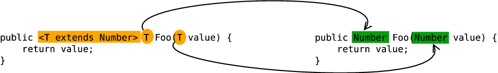

文章内容主要是学习笔记，来源：https://www.pdai.tech/md/java/basic/java-basic-lan-basic.html
Java 基础 - 知识点 数据类型 包装类型 八个基本类型:
boolean/（java规范中，没有明确指出boolean的大小）
byte/8
char/16
short/16
int/32
float/32
long/64
double/64
基本类型都有对应的包装类型，基本类型与其对应的包装类型之间的赋值使用自动装箱与拆箱完成。
1 2 3 Integer x = 2; // 装箱 int y = x; // 拆箱
缓存池 new Integer(123) 与 Integer.valueOf(123) 的区别在于:
new Integer(123) 每次都会新建一个对象
Integer.valueOf(123) 会使用缓存池中的对象，多次调用会取得同一个对象的引用。
1 2 3 4 5 6 7 Integer x = new Integer(123); Integer y = new Integer(123); System.out.println(x == y); // false Integer z = Integer.valueOf(123); Integer k = Integer.valueOf(123); System.out.println(z == k); // true
valueOf() 方法的实现比较简单，就是先判断值是否在缓存池中，如果在的话就直接返回缓存池的内容。
1 2 3 4 5 6 public static Integer valueOf(int i) { if (i >= IntegerCache.low && i <= IntegerCache.high) return IntegerCache.cache[i + (-IntegerCache.low)]; return new Integer(i); }
在 Java 8 中，Integer 缓存池的大小默认为 -128~127。
1 2 3 4 5 6 7 8 9 10 11 12 13 14 15 16 17 18 19 20 21 22 23 24 25 26 27 28 29 30 static final int low = -128; static final int high; static final Integer cache[]; static { // high value may be configured by property int h = 127; String integerCacheHighPropValue = sun.misc.VM.getSavedProperty("java.lang.Integer.IntegerCache.high"); if (integerCacheHighPropValue != null) { try { int i = parseInt(integerCacheHighPropValue); i = Math.max(i, 127); // Maximum array size is Integer.MAX_VALUE h = Math.min(i, Integer.MAX_VALUE - (-low) -1); } catch( NumberFormatException nfe) { // If the property cannot be parsed into an int, ignore it. } } high = h; cache = new Integer[(high - low) + 1]; int j = low; for(int k = 0; k < cache.length; k++) cache[k] = new Integer(j++); // range [-128, 127] must be interned (JLS7 5.1.7) assert IntegerCache.high >= 127; }
编译器会在自动装箱过程调用 valueOf() 方法，因此多个 Integer 实例使用自动装箱来创建并且值相同，那么就会引用相同的对象。
1 2 3 4 Integer m = 123; Integer n = 123; System.out.println(m == n); // true
基本类型对应的缓冲池如下:
boolean values true and false
all byte values
short values between -128 and 127
int values between -128 and 127
char in the range \u0000 to \u007F
在使用这些基本类型对应的包装类型时，就可以直接使用缓冲池中的对象。
String 概览 String 被声明为 final，因此它不可被继承。
内部使用 char 数组存储数据，该数组被声明为 final，这意味着 value 数组初始化之后就不能再引用其它数组。并且 String 内部没有改变 value 数组的方法，因此可以保证 String 不可变。
1 2 3 4 5 public final class String implements java.io.Serializable, Comparable<String>, CharSequence { /** The value is used for character storage. */ private final char value[];
不可变的好处 1. 可以缓存 hash 值
因为 String 的 hash 值经常被使用，例如 String 用做 HashMap 的 key。不可变的特性可以使得 hash 值也不可变，因此只需要进行一次计算。
2. String Pool 的需要
如果一个 String 对象已经被创建过了，那么就会从 String Pool 中取得引用。只有 String 是不可变的，才可能使用 String Pool。
3. 安全性
String 经常作为参数，String 不可变性可以保证参数不可变。例如在作为网络连接参数的情况下如果 String 是可变的，那么在网络连接过程中，String 被改变，改变 String 对象的那一方以为现在连接的是其它主机，而实际情况却不一定是。
4. 线程安全
String 不可变性天生具备线程安全，可以在多个线程中安全地使用。
String, StringBuffer and StringBuilder 1. 可变性
String 不可变
StringBuffer 和 StringBuilder 可变
2. 线程安全
String 不可变，因此是线程安全的
StringBuilder 快，不是线程安全的
StringBuffer 是线程安全的，内部使用 synchronized 进行同步
String.intern() 使用 String.intern() 可以保证相同内容的字符串变量引用同一的内存对象。
下面示例中，s1 和 s2 采用 new String() 的方式新建了两个不同对象，而 s3 是通过 s1.intern() 方法取得一个对象引用。intern() 首先把 s1 引用的对象放到 String Pool(字符串常量池)中，然后返回这个对象引用。因此 s3 和 s1 引用的是同一个字符串常量池的对象。
1 2 3 4 5 6 String s1 = new String("aaa"); String s2 = new String("aaa"); System.out.println(s1 == s2); // false String s3 = s1.intern(); System.out.println(s1.intern() == s3); // true
如果是采用 “bbb” 这种使用双引号的形式创建字符串实例，会自动地将新建的对象放入 String Pool 中。
1 2 3 4 String s4 = "bbb"; String s5 = "bbb"; System.out.println(s4 == s5); // true
在 Java 7 之前，字符串常量池被放在运行时常量池中，它属于永久代。而在 Java 7，字符串常量池被移到 Native Method 中。这是因为永久代的空间有限，在大量使用字符串的场景下会导致 OutOfMemoryError 错误。
运算 参数传递 Java 的参数是以值传递的形式传入方法中，而不是引用传递。
以下代码中 Dog dog 的 dog 是一个指针，存储的是对象的地址。在将一个参数传入一个方法时，本质上是将对象的地址以值的方式传递到形参中。因此在方法中改变指针引用的对象，那么这两个指针此时指向的是完全不同的对象，一方改变其所指向对象的内容对另一方没有影响。
1 2 3 4 5 6 7 8 9 10 11 12 13 14 15 16 17 18 19 20 public class Dog { String name; Dog(String name) { this.name = name; } String getName() { return this.name; } void setName(String name) { this.name = name; } String getObjectAddress() { return super.toString(); } }
1 2 3 4 5 6 7 8 9 10 11 12 13 14 15 16 17 public class PassByValueExample { public static void main(String[] args) { Dog dog = new Dog("A"); System.out.println(dog.getObjectAddress()); // Dog@4554617c func(dog); System.out.println(dog.getObjectAddress()); // Dog@4554617c System.out.println(dog.getName()); // A } private static void func(Dog dog) { System.out.println(dog.getObjectAddress()); // Dog@4554617c dog = new Dog("B"); System.out.println(dog.getObjectAddress()); // Dog@74a14482 System.out.println(dog.getName()); // B } }
但是如果在方法中改变对象的字段值会改变原对象该字段值，因为改变的是同一个地址指向的内容。
1 2 3 4 5 6 7 8 9 10 11 12 class PassByValueExample { public static void main(String[] args) { Dog dog = new Dog("A"); func(dog); System.out.println(dog.getName()); // B } private static void func(Dog dog) { dog.setName("B"); } }
float 与 double 1.1 字面量属于 double 类型，不能直接将 1.1 直接赋值给 float 变量，因为这是向下转型。Java 不能隐式执行向下转型，因为这会使得精度降低。
1.1f 字面量才是 float 类型。
隐式类型转换 因为字面量 1 是 int 类型，它比 short 类型精度要高，因此不能隐式地将 int 类型下转型为 short 类型。
1 2 3 short s1 = 1; // s1 = s1 + 1;
但是使用 += 运算符可以执行隐式类型转换。
上面的语句相当于将 s1 + 1 的计算结果进行了向下转型:
switch 从 Java 7 开始，可以在 switch 条件判断语句中使用 String 对象。
1 2 3 4 5 6 7 8 9 10 String s = "a"; switch (s) { case "a": System.out.println("aaa"); break; case "b": System.out.println("bbb"); break; }
switch 不支持 long，是因为 switch 的设计初衷是对那些只有少数的几个值进行等值判断，如果值过于复杂，那么还是用 if 比较合适。
继承 访问权限 Java 中有三个访问权限修饰符: private、protected 以及 public，如果不加访问修饰符，表示包级可见。
可以对类或类中的成员(字段以及方法)加上访问修饰符。
类可见表示其它类可以用这个类创建实例对象。
成员可见表示其它类可以用这个类的实例对象访问到该成员；
protected 用于修饰成员，表示在继承体系中成员对于子类可见，但是这个访问修饰符对于类没有意义。
设计良好的模块会隐藏所有的实现细节，把它的 API 与它的实现清晰地隔离开来。模块之间只通过它们的 API 进行通信，一个模块不需要知道其他模块的内部工作情况，这个概念被称为信息隐藏或封装。因此访问权限应当尽可能地使每个类或者成员不被外界访问。
如果子类的方法重写了父类的方法，那么子类中该方法的访问级别不允许低于父类的访问级别。这是为了确保可以使用父类实例的地方都可以使用子类实例，也就是确保满足里氏替换原则。
字段决不能是公有的，因为这么做的话就失去了对这个字段修改行为的控制，客户端可以对其随意修改。例如下面的例子中，AccessExample 拥有 id 共有字段，如果在某个时刻，我们想要使用 int 去存储 id 字段，那么就需要去修改所有的客户端代码。
1 2 3 4 public class AccessExample { public String id; }
可以使用公有的 getter 和 setter 方法来替换公有字段，这样的话就可以控制对字段的修改行为。
1 2 3 4 5 6 7 8 9 10 11 12 13 public class AccessExample { private int id; public String getId() { return id + ""; } public void setId(String id) { this.id = Integer.valueOf(id); } }
但是也有例外，如果是包级私有的类或者私有的嵌套类，那么直接暴露成员不会有特别大的影响。
1 2 3 4 5 6 7 8 9 10 11 12 13 14 15 16 public class AccessWithInnerClassExample { private class InnerClass { int x; } private InnerClass innerClass; public AccessWithInnerClassExample() { innerClass = new InnerClass(); } public int getValue() { return innerClass.x; // 直接访问 } }
抽象类与接口 1. 抽象类
抽象类和抽象方法都使用 abstract 关键字进行声明。抽象类一般会包含抽象方法，抽象方法一定位于抽象类中。
抽象类和普通类最大的区别是，抽象类不能被实例化，需要继承抽象类才能实例化其子类。
1 2 3 4 5 6 7 8 9 10 11 12 public abstract class AbstractClassExample { protected int x; private int y; public abstract void func1(); public void func2() { System.out.println("func2"); } }
1 2 3 4 5 6 7 public class AbstractExtendClassExample extends AbstractClassExample { @Override public void func1() { System.out.println("func1"); } }
1 2 3 4 // AbstractClassExample ac1 = new AbstractClassExample(); // 'AbstractClassExample' is abstract; cannot be instantiated AbstractClassExample ac2 = new AbstractExtendClassExample(); ac2.func1();
2. 接口
接口是抽象类的延伸，在 Java 8 之前，它可以看成是一个完全抽象的类，也就是说它不能有任何的方法实现。
从 Java 8 开始，接口也可以拥有默认的方法实现，这是因为不支持默认方法的接口的维护成本太高了。在 Java 8 之前，如果一个接口想要添加新的方法，那么要修改所有实现了该接口的类。
接口的成员(字段 + 方法)默认都是 public 的，并且不允许定义为 private 或者 protected。
接口的字段默认都是 static 和 final 的。
1 2 3 4 5 6 7 8 9 10 11 12 13 14 15 public interface InterfaceExample { void func1(); default void func2(){ System.out.println("func2"); } int x = 123; // int y; // Variable 'y' might not have been initialized public int z = 0; // Modifier 'public' is redundant for interface fields // private int k = 0; // Modifier 'private' not allowed here // protected int l = 0; // Modifier 'protected' not allowed here // private void fun3(); // Modifier 'private' not allowed here }
1 2 3 4 5 6 7 public class InterfaceImplementExample implements InterfaceExample { @Override public void func1() { System.out.println("func1"); } }
1 2 3 4 5 // InterfaceExample ie1 = new InterfaceExample(); // 'InterfaceExample' is abstract; cannot be instantiated InterfaceExample ie2 = new InterfaceImplementExample(); ie2.func1(); System.out.println(InterfaceExample.x);
3. 比较
从设计层面上看，抽象类提供了一种 IS-A 关系，那么就必须满足里式替换原则，即子类对象必须能够替换掉所有父类对象。而接口更像是一种 LIKE-A 关系，它只是提供一种方法实现契约，并不要求接口和实现接口的类具有 IS-A 关系。
从使用上来看，一个类可以实现多个接口，但是不能继承多个抽象类。
接口的字段只能是 static 和 final 类型的，而抽象类的字段没有这种限制。
接口的成员只能是 public 的，而抽象类的成员可以有多种访问权限。
4. 使用选择
使用接口:
需要让不相关的类都实现一个方法，例如不相关的类都可以实现 Compareable 接口中的 compareTo() 方法；
需要使用多重继承。
使用抽象类:
需要在几个相关的类中共享代码。
需要能控制继承来的成员的访问权限，而不是都为 public。
需要继承非静态和非常量字段。
在很多情况下，接口优先于抽象类，因为接口没有抽象类严格的类层次结构要求，可以灵活地为一个类添加行为。并且从 Java 8 开始，接口也可以有默认的方法实现，使得修改接口的成本也变的很低。
super
1 2 3 4 5 6 7 8 9 10 11 12 13 14 public class SuperExample { protected int x; protected int y; public SuperExample(int x, int y) { this.x = x; this.y = y; } public void func() { System.out.println("SuperExample.func()"); } }
1 2 3 4 5 6 7 8 9 10 11 12 13 14 15 public class SuperExtendExample extends SuperExample { private int z; public SuperExtendExample(int x, int y, int z) { super(x, y); this.z = z; } @Override public void func() { super.func(); System.out.println("SuperExtendExample.func()"); } }
1 2 3 SuperExample e = new SuperExtendExample(1, 2, 3); e.func();
1 2 3 SuperExample.func() SuperExtendExample.func()
重写与重载 1. 重写(Override)
存在于继承体系中，指子类实现了一个与父类在方法声明上完全相同的一个方法。
为了满足里式替换原则，重写有有以下两个限制:
子类方法的访问权限必须大于等于父类方法；
子类方法的返回类型必须是父类方法返回类型或为其子类型。
使用 @Override 注解，可以让编译器帮忙检查是否满足上面的两个限制条件。
2. 重载(Overload)
存在于同一个类中，指一个方法与已经存在的方法名称上相同，但是参数类型、个数、顺序至少有一个不同。
应该注意的是，返回值不同，其它都相同不算是重载。
Object 通用方法 概览 1 2 3 4 5 6 7 8 9 10 11 12 13 14 15 16 17 18 19 20 21 22 public final native Class<?> getClass() public native int hashCode() public boolean equals(Object obj) protected native Object clone() throws CloneNotSupportedException public String toString() public final native void notify() public final native void notifyAll() public final native void wait(long timeout) throws InterruptedException public final void wait(long timeout, int nanos) throws InterruptedException public final void wait() throws InterruptedException protected void finalize() throws Throwable {}
equals() 1. 等价关系
(一)自反性
(二)对称性
1 2 x.equals(y) == y.equals(x); // true
(三)传递性
1 2 3 if (x.equals(y) && y.equals(z)) x.equals(z); // true;
(四)一致性
多次调用 equals() 方法结果不变
1 2 x.equals(null); // false;
(五)与 null 的比较
对任何不是 null 的对象 x 调用 x.equals(null) 结果都为 false
1 2 x.equals(null); // false;
2. equals() 与 ==
对于基本类型，== 判断两个值是否相等，基本类型没有 equals() 方法。
对于引用类型，== 判断两个变量是否引用同一个对象，而 equals() 判断引用的对象是否等价。
1 2 3 4 5 Integer x = new Integer(1); Integer y = new Integer(1); System.out.println(x.equals(y)); // true System.out.println(x == y); // false
3. 实现
检查是否为同一个对象的引用，如果是直接返回 true；
检查是否是同一个类型，如果不是，直接返回 false；
将 Object 对象进行转型；
判断每个关键域是否相等。
1 2 3 4 5 6 7 8 9 10 11 12 13 14 15 16 17 18 19 20 21 22 23 24 public class EqualExample { private int x; private int y; private int z; public EqualExample(int x, int y, int z) { this.x = x; this.y = y; this.z = z; } @Override public boolean equals(Object o) { if (this == o) return true; if (o == null || getClass() != o.getClass()) return false; EqualExample that = (EqualExample) o; if (x != that.x) return false; if (y != that.y) return false; return z == that.z; } }
hashCode() hashCode() 返回散列值，而 equals() 是用来判断两个对象是否等价。等价的两个对象散列值一定相同，但是散列值相同的两个对象不一定等价。
在覆盖 equals() 方法时应当总是覆盖 hashCode() 方法，保证等价的两个对象散列值也相等。
下面的代码中，新建了两个等价的对象，并将它们添加到 HashSet 中。我们希望将这两个对象当成一样的，只在集合中添加一个对象，但是因为 EqualExample 没有实现 hasCode() 方法，因此这两个对象的散列值是不同的，最终导致集合添加了两个等价的对象。
1 2 3 4 5 6 7 8 EqualExample e1 = new EqualExample(1, 1, 1); EqualExample e2 = new EqualExample(1, 1, 1); System.out.println(e1.equals(e2)); // true HashSet<EqualExample> set = new HashSet<>(); set.add(e1); set.add(e2); System.out.println(set.size()); // 2
理想的散列函数应当具有均匀性，即不相等的对象应当均匀分布到所有可能的散列值上。这就要求了散列函数要把所有域的值都考虑进来，可以将每个域都当成 R 进制的某一位，然后组成一个 R 进制的整数。R 一般取 31，因为它是一个奇素数，如果是偶数的话，当出现乘法溢出，信息就会丢失，因为与 2 相乘相当于向左移一位。
一个数与 31 相乘可以转换成移位和减法: 31*x == (x<<5)-x，编译器会自动进行这个优化。
1 2 3 4 5 6 7 8 9 @Override public int hashCode() { int result = 17; result = 31 * result + x; result = 31 * result + y; result = 31 * result + z; return result; }
toString() 默认返回 ToStringExample@4554617c 这种形式，其中 @ 后面的数值为散列码的无符号十六进制表示。
1 2 3 4 5 6 7 8 public class ToStringExample { private int number; public ToStringExample(int number) { this.number = number; } }
1 2 3 ToStringExample example = new ToStringExample(123); System.out.println(example.toString());
1 2 ToStringExample@4554617c
clone() 1. cloneable
clone() 是 Object 的 protected 方法，它不是 public，一个类不显式去重写 clone()，其它类就不能直接去调用该类实例的 clone() 方法。
1 2 3 4 5 public class CloneExample { private int a; private int b; }
1 2 3 CloneExample e1 = new CloneExample(); // CloneExample e2 = e1.clone(); // 'clone()' has protected access in 'java.lang.Object'
重写 clone() 得到以下实现:
1 2 3 4 5 6 7 8 9 10 public class CloneExample { private int a; private int b; @Override protected CloneExample clone() throws CloneNotSupportedException { return (CloneExample)super.clone(); } }
1 2 3 4 5 6 7 CloneExample e1 = new CloneExample(); try { CloneExample e2 = e1.clone(); } catch (CloneNotSupportedException e) { e.printStackTrace(); }
1 2 java.lang.CloneNotSupportedException: CloneExample
以上抛出了 CloneNotSupportedException，这是因为 CloneExample 没有实现 Cloneable 接口。
应该注意的是，clone() 方法并不是 Cloneable 接口的方法，而是 Object 的一个 protected 方法。Cloneable 接口只是规定，如果一个类没有实现 Cloneable 接口又调用了 clone() 方法，就会抛出 CloneNotSupportedException。
1 2 3 4 5 6 7 8 9 10 public class CloneExample implements Cloneable { private int a; private int b; @Override protected Object clone() throws CloneNotSupportedException { return super.clone(); } }
2. 浅拷贝
拷贝对象和原始对象的引用类型引用同一个对象。
1 2 3 4 5 6 7 8 9 10 11 12 13 14 15 16 17 18 19 20 21 public class Subject { private String name; public Subject(String name) { this.name = name; } public String getName() { return name; } public void setName(String name) { this.name = name; } @Override public String toString() { return "[Subject: " + this.hashCode() + ",name:" + name + "]"; } }
3. 深拷贝
拷贝对象和原始对象的引用类型引用不同对象。
1 2 3 4 5 6 7 8 9 10 11 12 13 14 15 16 17 18 19 20 21 22 23 24 25 26 27 28 29 30 31 32 33 34 35 36 37 38 39 40 41 42 43 44 45 46 47 48 49 50 51 52 public class Student implements Cloneable { //引用类型 private Subject subject; //基础数据类型 private String name; private int age; public Subject getSubject() { return subject; } public void setSubject(Subject subject) { this.subject = subject; } public String getName() { return name; } public void setName(String name) { this.name = name; } public int getAge() { return age; } public void setAge(int age) { this.age = age; } /** * 重写clone()方法 * @return */ @Override public Object clone() { //浅拷贝 try { // 直接调用父类的clone()方法,object的clone是一个native方法 return super.clone(); } catch (CloneNotSupportedException e) { return null; } } @Override public String toString() { return "[Student: " + this.hashCode() + ",subject:" + subject + ",name:" + name + ",age:" + age + "]"; } }
4. clone() 的替代方案
使用 clone() 方法来拷贝一个对象即复杂又有风险，它会抛出异常，并且还需要类型转换。Effective Java 书上讲到，最好不要去使用 clone()，可以使用拷贝构造函数或者拷贝工厂来拷贝一个对象。
1 2 3 4 5 6 7 8 9 10 11 12 13 14 15 16 17 18 19 20 21 22 23 24 25 26 public class CloneConstructorExample { private int[] arr; public CloneConstructorExample() { arr = new int[10]; for (int i = 0; i < arr.length; i++) { arr[i] = i; } } public CloneConstructorExample(CloneConstructorExample original) { arr = new int[original.arr.length]; for (int i = 0; i < original.arr.length; i++) { arr[i] = original.arr[i]; } } public void set(int index, int value) { arr[index] = value; } public int get(int index) { return arr[index]; } }
1 2 3 4 5 CloneConstructorExample e1 = new CloneConstructorExample(); CloneConstructorExample e2 = new CloneConstructorExample(e1); e1.set(2, 222); System.out.println(e2.get(2)); // 2
关键字 final 1. 数据
声明数据为常量，可以是编译时常量，也可以是在运行时被初始化后不能被改变的常量。
对于基本类型，final 使数值不变；
对于引用类型，final 使引用不变，也就不能引用其它对象，但是被引用的对象本身是可以修改的
1 2 3 4 5 final int x = 1; // x = 2; // cannot assign value to final variable 'x' final A y = new A(); y.a = 1;
2. 方法
声明方法不能被子类重写。
private 方法隐式地被指定为 final，如果在子类中定义的方法和基类中的一个 private 方法签名相同，此时子类的方法不是重写基类方法，而是在子类中定义了一个新的方法。
3. 类
声明类不允许被继承。
static 1. 静态变量
静态变量: 又称为类变量，也就是说这个变量属于类的，类所有的实例都共享静态变量，可以直接通过类名来访问它；静态变量在内存中只存在一份。
实例变量: 每创建一个实例就会产生一个实例变量，它与该实例同生共死。
1 2 3 4 5 6 7 8 9 10 11 12 public class A { private int x; // 实例变量 private static int y; // 静态变量 public static void main(String[] args) { // int x = A.x; // Non-static field 'x' cannot be referenced from a static context A a = new A(); int x = a.x; int y = A.y; } }
2. 静态方法
静态方法在类加载的时候就存在了，它不依赖于任何实例。所以静态方法必须有实现，也就是说它不能是抽象方法(abstract)。
1 2 3 4 5 6 public abstract class A { public static void func1(){ } // public abstract static void func2(); // Illegal combination of modifiers: 'abstract' and 'static' }
只能访问所属类的静态字段和静态方法，方法中不能有 this 和 super 关键字。
1 2 3 4 5 6 7 8 9 10 11 public class A { private static int x; private int y; public static void func1(){ int a = x; // int b = y; // Non-static field 'y' cannot be referenced from a static context // int b = this.y; // 'A.this' cannot be referenced from a static context } }
3. 静态语句块
静态语句块在类初始化时运行一次。
1 2 3 4 5 6 7 8 9 10 11 public class A { static { System.out.println("123"); } public static void main(String[] args) { A a1 = new A(); A a2 = new A(); } }
4. 静态内部类
非静态内部类依赖于外部类的实例，而静态内部类不需要
1 2 3 4 5 6 7 8 9 10 11 12 13 14 15 public class OuterClass { class InnerClass { } static class StaticInnerClass { } public static void main(String[] args) { // InnerClass innerClass = new InnerClass(); // 'OuterClass.this' cannot be referenced from a static context OuterClass outerClass = new OuterClass(); InnerClass innerClass = outerClass.new InnerClass(); StaticInnerClass staticInnerClass = new StaticInnerClass(); } }
静态内部类不能访问外部类的非静态的变量和方法。
5. 静态导包
在使用静态变量和方法时不用再指明 ClassName，从而简化代码，但可读性大大降低。
1 2 import static com.xxx.ClassName.*
6. 初始化顺序
静态变量和静态语句块优先于实例变量和普通语句块，静态变量和静态语句块的初始化顺序取决于它们在代码中的顺序。
1 2 3 4 5 6 7 8 9 10 11 12 13 14 15 16 17 public static String staticField = "静态变量"; static { System.out.println("静态语句块"); } public String field = "实例变量"; { System.out.println("普通语句块"); } //最后才是构造函数的初始化。 public InitialOrderTest() { System.out.println("构造函数"); }
存在继承的情况下，初始化顺序为:
父类(静态变量、静态语句块)
子类(静态变量、静态语句块)
父类(实例变量、普通语句块)
父类(构造函数)
子类(实例变量、普通语句块)
子类(构造函数)
Java 基础 - 泛型机制详解
Java泛型这个特性是从JDK 1.5才开始加入的，因此为了兼容之前的版本，Java泛型的实现采取了“伪泛型 ”的策略，即Java在语法上支持泛型，但是在编译阶段会进行所谓的“类型擦除 ”（Type Erasure），将所有的泛型表示（尖括号中的内容）都替换为具体的类型（其对应的原生态类型），就像完全没有泛型一样。本文综合多篇文章后，总结了Java 泛型的相关知识，希望可以提升你对Java中泛型的认知效率
为什么会引入泛型
泛型的本质是为了参数化类型（在不创建新的类型的情况下，通过泛型指定的不同类型来控制形参具体限制的类型）。也就是说在泛型使用过程中，操作的数据类型被指定为一个参数，这种参数类型可以用在类、接口和方法中，分别被称为泛型类、泛型接口、泛型方法。
引入泛型的意义在于：
泛型的基本使用 泛型类
1 2 3 4 5 6 7 8 9 10 11 12 13 14 15 16 17 class Point<T>{ // 此处可以随便写标识符号，T是type的简称 private T var ; // var的类型由T指定，即：由外部指定 public T getVar(){ // 返回值的类型由外部决定 return var ; } public void setVar(T var){ // 设置的类型也由外部决定 this.var = var ; } } public class GenericsDemo06{ public static void main(String args[]){ Point<String> p = new Point<String>() ; // 里面的var类型为String类型 p.setVar("it") ; // 设置字符串 System.out.println(p.getVar().length()) ; // 取得字符串的长度 } }
1 2 3 4 5 6 7 8 9 10 11 12 13 14 15 16 17 18 19 20 21 22 23 24 25 26 27 28 class Notepad<K,V>{ // 此处指定了两个泛型类型 private K key ; // 此变量的类型由外部决定 private V value ; // 此变量的类型由外部决定 public K getKey(){ return this.key ; } public V getValue(){ return this.value ; } public void setKey(K key){ this.key = key ; } public void setValue(V value){ this.value = value ; } } public class GenericsDemo09{ public static void main(String args[]){ Notepad<String,Integer> t = null ; // 定义两个泛型类型的对象 t = new Notepad<String,Integer>() ; // 里面的key为String，value为Integer t.setKey("汤姆") ; // 设置第一个内容 t.setValue(20) ; // 设置第二个内容 System.out.print("姓名；" + t.getKey()) ; // 取得信息 System.out.print("，年龄；" + t.getValue()) ; // 取得信息 } }
泛型接口
1 2 3 4 5 6 7 8 9 10 11 12 13 14 15 16 17 18 19 20 21 22 23 interface Info<T>{ // 在接口上定义泛型 public T getVar() ; // 定义抽象方法，抽象方法的返回值就是泛型类型 } class InfoImpl<T> implements Info<T>{ // 定义泛型接口的子类 private T var ; // 定义属性 public InfoImpl(T var){ // 通过构造方法设置属性内容 this.setVar(var) ; } public void setVar(T var){ this.var = var ; } public T getVar(){ return this.var ; } } public class GenericsDemo24{ public static void main(String arsg[]){ Info<String> i = null; // 声明接口对象 i = new InfoImpl<String>("汤姆") ; // 通过子类实例化对象 System.out.println("内容：" + i.getVar()) ; } }
泛型方法 泛型方法，是在调用方法的时候指明泛型的具体类型。
说明一下，定义泛型方法时，必须在返回值前边加一个<T>，来声明这是一个泛型方法，持有一个泛型T，然后才可以用泛型T作为方法的返回值。
Class<T>的作用就是指明泛型的具体类型，而Class<T>类型的变量c，可以用来创建泛型类的对象。
为什么要用变量c来创建对象呢？既然是泛型方法，就代表着我们不知道具体的类型是什么，也不知道构造方法如何，因此没有办法去new一个对象，但可以利用变量c的newInstance方法去创建对象，也就是利用反射创建对象。
泛型方法要求的参数是Class<T>类型，而Class.forName()方法的返回值也是Class<T>，因此可以用Class.forName()作为参数。其中，forName()方法中的参数是何种类型，返回的Class<T>就是何种类型。在本例中，forName()方法中传入的是User类的完整路径，因此返回的是Class<User>类型的对象，因此调用泛型方法时，变量c的类型就是Class<User>，因此泛型方法中的泛型T就被指明为User，因此变量obj的类型为User。
当然，泛型方法不是仅仅可以有一个参数Class<T>，可以根据需要添加其他参数。
为什么要使用泛型方法呢 ？因为泛型类要在实例化的时候就指明类型，如果想换一种类型，不得不重新new一次，可能不够灵活；而泛型方法可以在调用的时候指明类型，更加灵活。
泛型的上下限
先看下如下的代码，很明显是会报错的 （具体错误原因请参考后文）。
1 2 3 4 5 6 7 8 9 10 11 12 13 14 15 16 17 18 19 20 21 class A{} class B extends A {} // 如下两个方法不会报错 public static void funA(A a) { // ... } public static void funB(B b) { funA(b); // ... } // 如下funD方法会报错 public static void funC(List<A> listA) { // ... } public static void funD(List<B> listB) { funC(listB); // Unresolved compilation problem: The method doPrint(List<A>) in the type test is not applicable for the arguments (List<B>) // ... }
那么如何解决呢？
为了解决泛型中隐含的转换问题，Java泛型加入了类型参数的上下边界机制。<? extends A>表示该类型参数可以是A(上边界)或者A的子类类型。编译时擦除到类型A，即用A类型代替类型参数。这种方法可以解决开始遇到的问题，编译器知道类型参数的范围，如果传入的实例类型B是在这个范围内的话允许转换，这时只要一次类型转换就可以了，运行时会把对象当做A的实例看待。
1 2 3 4 5 6 7 8 public static void funC(List<? extends A> listA) { // ... } public static void funD(List<B> listB) { funC(listB); // OK // ... }
在使用泛型的时候，我们可以为传入的泛型类型实参进行上下边界的限制，如：类型实参只准传入某种类型的父类或某种类型的子类。
上限
1 2 3 4 5 6 7 8 9 10 11 12 13 14 15 16 17 18 class Info<T extends Number>{ // 此处泛型只能是数字类型 private T var ; // 定义泛型变量 public void setVar(T var){ this.var = var ; } public T getVar(){ return this.var ; } public String toString(){ // 直接打印 return this.var.toString() ; } } public class demo1{ public static void main(String args[]){ Info<Integer> i1 = new Info<Integer>() ; // 声明Integer的泛型对象 } }
下限
1 2 3 4 5 6 7 8 9 10 11 12 13 14 15 16 17 18 19 20 21 22 23 24 25 26 class Info<T>{ private T var ; // 定义泛型变量 public void setVar(T var){ this.var = var ; } public T getVar(){ return this.var ; } public String toString(){ // 直接打印 return this.var.toString() ; } } public class GenericsDemo21{ public static void main(String args[]){ Info<String> i1 = new Info<String>() ; // 声明String的泛型对象 Info<Object> i2 = new Info<Object>() ; // 声明Object的泛型对象 i1.setVar("hello") ; i2.setVar(new Object()) ; fun(i1) ; fun(i2) ; } public static void fun(Info<? super String> temp){ // 只能接收String或Object类型的泛型，String类的父类只有Object类 System.out.print(temp + ", ") ; } }
小结
1 2 3 4 5 6 7 8 9 10 <?> 无限制通配符 <? extends E> extends 关键字声明了类型的上界，表示参数化的类型可能是所指定的类型，或者是此类型的子类 <? super E> super 关键字声明了类型的下界，表示参数化的类型可能是指定的类型，或者是此类型的父类 // 使用原则《Effictive Java》 // 为了获得最大限度的灵活性，要在表示 生产者或者消费者 的输入参数上使用通配符，使用的规则就是：生产者有上限、消费者有下限 1. 如果参数化类型表示一个 T 的生产者，使用 < ? extends T>; 2. 如果它表示一个 T 的消费者，就使用 < ? super T>； 3. 如果既是生产又是消费，那使用通配符就没什么意义了，因为你需要的是精确的参数类型。
1 2 3 4 5 6 7 8 9 10 11 12 13 14 15 16 private <E extends Comparable<? super E>> E max(List<? extends E> e1) { if (e1 == null){ return null; } //迭代器返回的元素属于 E 的某个子类型 Iterator<? extends E> iterator = e1.iterator(); E result = iterator.next(); while (iterator.hasNext()){ E next = iterator.next(); if (next.compareTo(result) > 0){ result = next; } } return result; }
上述代码中的类型参数 E 的范围是<E extends Comparable<? super E>>，我们可以分步查看：
要进行比较，所以 E 需要是可比较的类，因此需要 extends Comparable<…>（注意这里不要和继承的 extends 搞混了，不一样）
Comparable< ? super E> 要对 E 进行比较，即 E 的消费者，所以需要用 super而参数 List< ? extends E> 表示要操作的数据是 E 的子类的列表，指定上限，这样容器才够大
多个限制
使用&符号
1 2 3 4 5 6 7 8 9 10 11 12 public class Client { //工资低于2500元的上斑族并且站立的乘客车票打8折 public static <T extends Staff & Passenger> void discount(T t){ if(t.getSalary()<2500 && t.isStanding()){ System.out.println("恭喜你！您的车票打八折！"); } } public static void main(String[] args) { discount(new Me()); } }
泛型数组
具体可以参考下文中关于泛型数组的理解。
首先，我们泛型数组相关的申明：
1 2 3 4 5 6 7 List<String>[] list11 = new ArrayList<String>[10]; //编译错误，非法创建 List<String>[] list12 = new ArrayList<?>[10]; //编译错误，需要强转类型 List<String>[] list13 = (List<String>[]) new ArrayList<?>[10]; //OK，但是会有警告 List<?>[] list14 = new ArrayList<String>[10]; //编译错误，非法创建 List<?>[] list15 = new ArrayList<?>[10]; //OK List<String>[] list6 = new ArrayList[10]; //OK，但是会有警告
那么通常我们如何用呢？
1 2 3 4 5 6 7 8 9 10 11 12 13 14 15 16 public class GenericsDemo30{ public static void main(String args[]){ Integer i[] = fun1(1,2,3,4,5,6) ; // 返回泛型数组 fun2(i) ; } public static <T> T[] fun1(T...arg){ // 接收可变参数 return arg ; // 返回泛型数组 } public static <T> void fun2(T param[]){ // 输出 System.out.print("接收泛型数组：") ; for(T t:param){ System.out.print(t + "、") ; } } }
1 2 3 4 public ArrayWithTypeToken(Class<T> type, int size) { array = (T[]) Array.newInstance(type, size); }
深入理解泛型 如何理解Java中的泛型是伪泛型？泛型中类型擦除
Java泛型这个特性是从JDK 1.5才开始加入的，因此为了兼容之前的版本，Java泛型的实现采取了“伪泛型 ”的策略，即Java在语法上支持泛型，但是在编译阶段会进行所谓的“类型擦除 ”（Type Erasure），将所有的泛型表示（尖括号中的内容）都替换为具体的类型（其对应的原生态类型），就像完全没有泛型一样。理解类型擦除对于用好泛型是很有帮助的，尤其是一些看起来“疑难杂症”的问题，弄明白了类型擦除也就迎刃而解了。
泛型的类型擦除原则 是：
消除类型参数声明，即删除<>及其包围的部分。
根据类型参数的上下界推断并替换所有的类型参数为原生态类型：如果类型参数是无限制通配符或没有上下界限定则替换为Object，如果存在上下界限定则根据子类替换原则取类型参数的最左边限定类型（即父类）。
为了保证类型安全，必要时插入强制类型转换代码。
自动产生“桥接方法”以保证擦除类型后的代码仍然具有泛型的“多态性”。
那么如何进行擦除的呢 ？
当类定义中的类型参数没有任何限制时，在类型擦除中直接被替换为Object，即形如<T>和<?>的类型参数都被替换为Object。
当类定义中的类型参数存在限制（上下界）时，在类型擦除中替换为类型参数的上界或者下界，比如形如<T extends Number>和<? extends Number>的类型参数被替换为Number，<? super Number>被替换为Object。
擦除方法定义中的类型参数原则和擦除类定义中的类型参数是一样的，这里仅以擦除方法定义中的有限制类型参数为例。

如何证明类型的擦除呢？
1 2 3 4 5 6 7 8 9 10 11 12 13 14 public class Test { public static void main(String[] args) { ArrayList<String> list1 = new ArrayList<String>(); list1.add("abc"); ArrayList<Integer> list2 = new ArrayList<Integer>(); list2.add(123); System.out.println(list1.getClass() == list2.getClass()); // true } }
1 2 3 4 5 6 7 8 9 10 11 12 13 14 15 16 17 public class Test { public static void main(String[] args) throws Exception { ArrayList<Integer> list = new ArrayList<Integer>(); list.add(1); //这样调用 add 方法只能存储整形，因为泛型类型的实例为 Integer list.getClass().getMethod("add", Object.class).invoke(list, "asd"); for (int i = 0; i < list.size(); i++) { System.out.println(list.get(i)); } } }
在程序中定义了一个ArrayList泛型类型实例化为Integer对象，如果直接调用add()方法，那么只能存储整数数据，不过当我们利用反射调用add()方法的时候，却可以存储字符串，这说明了Integer泛型实例在编译之后被擦除掉了，只保留了原始类型。
如何理解类型擦除后保留的原始类型? 原始类型 就是擦除去了泛型信息，最后在字节码中的类型变量的真正类型，无论何时定义一个泛型，相应的原始类型都会被自动提供，类型变量擦除，并使用其限定类型（无限定的变量用Object）替换。
1 2 3 4 5 6 7 8 9 10 class Pair<T> { private T value; public T getValue() { return value; } public void setValue(T value) { this.value = value; } }
Pair的原始类型为:
1 2 3 4 5 6 7 8 9 10 class Pair { private Object value; public Object getValue() { return value; } public void setValue(Object value) { this.value = value; } }
因为在Pair<T>中，T 是一个无限定的类型变量，所以用Object替换，其结果就是一个普通的类，如同泛型加入Java语言之前的已经实现的样子。在程序中可以包含不同类型的Pair，如Pair<String>或Pair<Integer>，但是擦除类型后他们的就成为原始的Pair类型了，原始类型都是Object。
从上面章节，我们也可以明白ArrayList被擦除类型后，原始类型也变为Object，所以通过反射我们就可以存储字符串了。
如果类型变量有限定，那么原始类型就用第一个边界的类型变量类替换。
比如: Pair这样声明的话
1 2 public class Pair<T extends Comparable> {}
那么原始类型就是Comparable。
要区分原始类型和泛型变量的类型。
在调用泛型方法时，可以指定泛型，也可以不指定泛型:
在不指定泛型的情况下，泛型变量的类型为该方法中的几种类型的同一父类的最小级，直到Object
在指定泛型的情况下，该方法的几种类型必须是该泛型的实例的类型或者其子类
1 2 3 4 5 6 7 8 9 10 11 12 13 14 15 16 17 18 19 20 public class Test { public static void main(String[] args) { /**不指定泛型的时候*/ int i = Test.add(1, 2); //这两个参数都是Integer，所以T为Integer类型 Number f = Test.add(1, 1.2); //这两个参数一个是Integer，以风格是Float，所以取同一父类的最小级，为Number Object o = Test.add(1, "asd"); //这两个参数一个是Integer，以风格是Float，所以取同一父类的最小级，为Object /**指定泛型的时候*/ int a = Test.<Integer>add(1, 2); //指定了Integer，所以只能为Integer类型或者其子类 int b = Test.<Integer>add(1, 2.2); //编译错误，指定了Integer，不能为Float Number c = Test.<Number>add(1, 2.2); //指定为Number，所以可以为Integer和Float } //这是一个简单的泛型方法 public static <T> T add(T x,T y){ return y; } }
其实在泛型类中，不指定泛型的时候，也差不多，只不过这个时候的泛型为Object，就比如ArrayList中，如果不指定泛型，那么这个ArrayList可以存储任意的对象。
1 2 3 4 5 6 7 public static void main(String[] args) { ArrayList list = new ArrayList(); list.add(1); list.add("121"); list.add(new Date()); }
如何理解泛型的编译期检查？
既然说类型变量会在编译的时候擦除掉，那为什么我们往 ArrayList 创建的对象中添加整数会报错呢？不是说泛型变量String会在编译的时候变为Object类型吗？为什么不能存别的类型呢？既然类型擦除了，如何保证我们只能使用泛型变量限定的类型呢？
Java编译器是通过先检查代码中泛型的类型，然后在进行类型擦除，再进行编译。
例如：
1 2 3 4 5 6 7 public static void main(String[] args) { ArrayList<String> list = new ArrayList<String>(); list.add("123"); list.add(123);//编译错误 }
在上面的程序中，使用add方法添加一个整型，在IDE中，直接会报错，说明这就是在编译之前的检查，因为如果是在编译之后检查，类型擦除后，原始类型为Object，是应该允许任意引用类型添加的。可实际上却不是这样的，这恰恰说明了关于泛型变量的使用，是会在编译之前检查的。
那么，这个类型检查是针对谁的呢 ？我们先看看参数化类型和原始类型的兼容。
以 ArrayList举例子，以前的写法:
1 2 ArrayList list = new ArrayList();
现在的写法:
1 2 ArrayList<String> list = new ArrayList<String>();
如果是与以前的代码兼容，各种引用传值之间，必然会出现如下的情况：
1 2 ArrayList<String> list1 = new ArrayList(); //第一种 情况 ArrayList list2 = new ArrayList<String>(); //第二种 情况
这样是没有错误的，不过会有个编译时警告。
不过在第一种情况，可以实现与完全使用泛型参数一样的效果，第二种则没有效果。
因为类型检查就是编译时完成的，new ArrayList()只是在内存中开辟了一个存储空间，可以存储任何类型对象，而真正设计类型检查的是它的引用，因为我们是使用它引用list1来调用它的方法，比如说调用add方法，所以list1引用能完成泛型类型的检查。而引用list2没有使用泛型，所以不行。
举例子：
1 2 3 4 5 6 7 8 9 10 11 12 13 14 15 16 17 18 19 20 21 public class Test { public static void main(String[] args) { ArrayList<String> list1 = new ArrayList(); list1.add("1"); //编译通过 list1.add(1); //编译错误 String str1 = list1.get(0); //返回类型就是String ArrayList list2 = new ArrayList<String>(); list2.add("1"); //编译通过 list2.add(1); //编译通过 Object object = list2.get(0); //返回类型就是Object new ArrayList<String>().add("11"); //编译通过 new ArrayList<String>().add(22); //编译错误 String str2 = new ArrayList<String>().get(0); //返回类型就是String } }
通过上面的例子，我们可以明白，类型检查就是针对引用的，谁是一个引用，用这个引用调用泛型方法，就会对这个引用调用的方法进行类型检测，而无关它真正引用的对象 。
泛型中参数话类型为什么不考虑继承关系 ？
在Java中，像下面形式的引用传递是不允许的:
1 2 3 ArrayList<String> list1 = new ArrayList<Object>(); //编译错误 ArrayList<Object> list2 = new ArrayList<String>(); //编译错误
我们先看第一种情况，将第一种情况拓展成下面的形式：
1 2 3 4 5 ArrayList<Object> list1 = new ArrayList<Object>(); list1.add(new Object()); list1.add(new Object()); ArrayList<String> list2 = list1; //编译错误
实际上，在第4行代码的时候，就会有编译错误。那么，我们先假设它编译没错。那么当我们使用list2引用用get()方法取值的时候，返回的都是String类型的对象（上面提到了，类型检测是根据引用来决定的），可是它里面实际上已经被我们存放了Object类型的对象，这样就会有ClassCastException了。所以为了避免这种极易出现的错误，Java不允许进行这样的引用传递。（这也是泛型出现的原因，就是为了解决类型转换的问题，我们不能违背它的初衷）。
1 2 3 4 5 6 ArrayList<String> list1 = new ArrayList<String>(); list1.add(new String()); list1.add(new String()); ArrayList<Object> list2 = list1; //编译错误
没错，这样的情况比第一种情况好的多，最起码，在我们用list2取值的时候不会出现ClassCastException，因为是从String转换为Object。可是，这样做有什么意义呢，泛型出现的原因，就是为了解决类型转换的问题。
我们使用了泛型，到头来，还是要自己强转，违背了泛型设计的初衷。所以java不允许这么干。再说，你如果又用list2往里面add()新的对象，那么到时候取得时候，我怎么知道我取出来的到底是String类型的，还是Object类型的呢？
所以，要格外注意，泛型中的引用传递的问题。
如何理解泛型的多态？泛型的桥接方法
类型擦除会造成多态的冲突，而JVM解决方法就是桥接方法。
现在有这样一个泛型类：
1 2 3 4 5 6 7 8 9 10 11 12 13 class Pair<T> { private T value; public T getValue() { return value; } public void setValue(T value) { this.value = value; } }
然后我们想要一个子类继承它。
1 2 3 4 5 6 7 8 9 10 11 12 13 class DateInter extends Pair<Date> { @Override public void setValue(Date value) { super.setValue(value); } @Override public Date getValue() { return super.getValue(); } }
在这个子类中，我们设定父类的泛型类型为Pair<Date>，在子类中，我们覆盖了父类的两个方法，我们的原意是这样的：将父类的泛型类型限定为Date，那么父类里面的两个方法的参数都为Date类型。
1 2 3 4 5 6 7 8 public Date getValue() { return value; } public void setValue(Date value) { this.value = value; }
所以，我们在子类中重写这两个方法一点问题也没有，实际上，从他们的@Override标签中也可以看到，一点问题也没有，实际上是这样的吗？
分析：实际上，类型擦除后，父类的的泛型类型全部变为了原始类型Object，所以父类编译之后会变成下面的样子：
1 2 3 4 5 6 7 8 9 10 11 12 class Pair { private Object value; public Object getValue() { return value; } public void setValue(Object value) { this.value = value; } }
再看子类的两个重写的方法的类型：
1 2 3 4 5 6 7 8 9 @Override public void setValue(Date value) { super.setValue(value); } @Override public Date getValue() { return super.getValue(); }
先来分析setValue方法，父类的类型是Object，而子类的类型是Date，参数类型不一样，这如果实在普通的继承关系中，根本就不会是重写，而是重载。 我们在一个main方法测试一下：
1 2 3 4 5 6 public static void main(String[] args) throws ClassNotFoundException { DateInter dateInter = new DateInter(); dateInter.setValue(new Date()); dateInter.setValue(new Object()); //编译错误 }
如果是重载，那么子类中两个setValue方法，一个是参数Object类型，一个是Date类型，可是我们发现，根本就没有这样的一个子类继承自父类的Object类型参数的方法。所以说，却是是重写了，而不是重载了。
为什么会这样呢 ？
原因是这样的，我们传入父类的泛型类型是Date，Pair<Date>，我们的本意是将泛型类变为如下：
1 2 3 4 5 6 7 8 9 10 class Pair { private Date value; public Date getValue() { return value; } public void setValue(Date value) { this.value = value; } }
然后再子类中重写参数类型为Date的那两个方法，实现继承中的多态。
可是由于种种原因，虚拟机并不能将泛型类型变为Date，只能将类型擦除掉，变为原始类型Object。这样，我们的本意是进行重写，实现多态。可是类型擦除后，只能变为了重载。这样，类型擦除就和多态有了冲突。JVM知道你的本意吗？知道！！！可是它能直接实现吗，不能！！！如果真的不能的话，那我们怎么去重写我们想要的Date类型参数的方法啊。
于是JVM采用了一个特殊的方法，来完成这项功能，那就是桥方法。
首先，我们用javap -c className的方式反编译下DateInter子类的字节码，结果如下：
1 2 3 4 5 6 7 8 9 10 11 12 13 14 15 16 17 18 19 20 21 22 23 24 25 26 27 28 29 30 31 32 33 34 35 36 class com.tao.test.DateInter extends com.tao.test.Pair<java.util.Date> { com.tao.test.DateInter(); Code: 0: aload_0 1: invokespecial #8 // Method com/tao/test/Pair."<init>":()V 4: return public void setValue(java.util.Date); //我们重写的setValue方法 Code: 0: aload_0 1: aload_1 2: invokespecial #16 // Method com/tao/test/Pair.setValue:(Ljava/lang/Object;)V 5: return public java.util.Date getValue(); //我们重写的getValue方法 Code: 0: aload_0 1: invokespecial #23 // Method com/tao/test/Pair.getValue:()Ljava/lang/Object; 4: checkcast #26 // class java/util/Date 7: areturn public java.lang.Object getValue(); //编译时由编译器生成的桥方法 Code: 0: aload_0 1: invokevirtual #28 // Method getValue:()Ljava/util/Date 去调用我们重写的getValue方法; 4: areturn public void setValue(java.lang.Object); //编译时由编译器生成的桥方法 Code: 0: aload_0 1: aload_1 2: checkcast #26 // class java/util/Date 5: invokevirtual #30 // Method setValue:(Ljava/util/Date; 去调用我们重写的setValue方法)V 8: return }
从编译的结果来看，我们本意重写setValue和getValue方法的子类，竟然有4个方法，其实不用惊奇，最后的两个方法，就是编译器自己生成的桥方法。可以看到桥方法的参数类型都是Object，也就是说，子类中真正覆盖父类两个方法的就是这两个我们看不到的桥方法。而打在我们自己定义的setvalue和getValue方法上面的@Oveerride只不过是假象。而桥方法的内部实现，就只是去调用我们自己重写的那两个方法。
所以，虚拟机巧妙的使用了桥方法，来解决了类型擦除和多态的冲突。
不过，要提到一点，这里面的setValue和getValue这两个桥方法的意义又有不同。
setValue方法是为了解决类型擦除与多态之间的冲突。
而getValue却有普遍的意义，怎么说呢，如果这是一个普通的继承关系：
那么父类的setValue方法如下：
1 2 3 4 public Object getValue() { return super.getValue(); }
而子类重写的方法是：
1 2 3 4 public Date getValue() { return super.getValue(); }
并且，还有一点也许会有疑问，子类中的巧方法Object getValue()和Date getValue()是同时存在的，可是如果是常规的两个方法，他们的方法签名是一样的，也就是说虚拟机根本不能分别这两个方法。如果是我们自己编写Java代码，这样的代码是无法通过编译器的检查的，但是虚拟机却是允许这样做的，因为虚拟机通过参数类型和返回类型来确定一个方法，所以编译器为了实现泛型的多态允许自己做这个看起来“不合法”的事情，然后交给虚拟器去区别
如何理解基本类型不能作为泛型类型？
比如，我们没有ArrayList<int>，只有ArrayList<Integer>, 为何？
因为当类型擦除后，ArrayList的原始类型变为Object，但是Object类型不能存储int值，只能引用Integer的值。
另外需要注意，我们能够使用list.add(1)是因为Java基础类型的自动装箱拆箱操作。
如何理解泛型类型不能实例化？
不能实例化泛型类型, 这本质上是由于类型擦除决定的：
我们可以看到如下代码会在编译器中报错：
T test = new T(); // ERROR
因为在 Java 编译期没法确定泛型参数化类型，也就找不到对应的类字节码文件，所以自然就不行了，此外由于T 被擦除为 Object，如果可以 new T() 则就变成了 new Object()，失去了本意。 如果我们确实需要实例化一个泛型，应该如何做呢？可以通过反射实现：
1 2 3 4 5 static <T> T newTclass (Class < T > clazz) throws InstantiationException, IllegalAccessException { T obj = clazz.newInstance(); return obj; }
如何理解泛型类中的静态方法和静态变量？
泛型类中的静态方法和静态变量不可以使用泛型类所声明的泛型类型参数
举例说明：
1 2 3 4 5 6 7 public class Test2<T> { public static T one; //编译错误 public static T show(T one){ //编译错误 return null; } }
因为泛型类中的泛型参数的实例化是在定义对象的时候指定的，而静态变量和静态方法不需要使用对象来调用。对象都没有创建，如何确定这个泛型参数是何种类型，所以当然是错误的。
但是要注意区分下面的一种情况：
1 2 3 4 5 6 7 public class Test2<T> { public static <T >T show(T one){ //这是正确的 return null; } }
因为这是一个泛型方法，在泛型方法中使用的T是自己在方法中定义的 T，而不是泛型类中的T。
如何理解异常中使用泛型？
不能抛出也不能捕获泛型类的对象 。事实上，泛型类扩展Throwable都不合法。例如：下面的定义将不会通过编译：
1 2 3 4 public class Problem<T> extends Exception { }
为什么不能扩展Throwable，因为异常都是在运行时捕获和抛出的，而在编译的时候，泛型信息全都会被擦除掉，那么，假设上面的编译可行，那么，在看下面的定义：
1 2 3 4 5 6 7 8 try{ } catch(Problem<Integer> e1) { } catch(Problem<Number> e2) { }
类型信息被擦除后，那么两个地方的catch都变为原始类型Object，那么也就是说，这两个地方的catch变的一模一样,就相当于下面的这样
1 2 3 4 5 6 7 8 try{ } catch(Problem<Object> e1) { } catch(Problem<Object> e2) { }
这个当然就是不行的。
Java 基础 - 注解机制详解
注解是JDK1.5版本开始引入的一个特性，用于对代码进行说明，可以对包、类、接口、字段、方法参数、局部变量等进行注解。它是框架学习和设计者必须掌握的基础
注解基础 注解是JDK1.5版本开始引入的一个特性，用于对代码进行说明，可以对包、类、接口、字段、方法参数、局部变量等进行注解。它主要的作用有以下四方面：
生成文档，通过代码里标识的元数据生成javadoc文档。
编译检查，通过代码里标识的元数据让编译器在编译期间进行检查验证。
编译时动态处理，编译时通过代码里标识的元数据动态处理，例如动态生成代码。
运行时动态处理，运行时通过代码里标识的元数据动态处理，例如使用反射注入实例。
这么来说是比较抽象的，我们具体看下注解的常见分类：
Java自带的标准注解 ，包括@Override、@Deprecated和@SuppressWarnings，分别用于标明重写某个方法、标明某个类或方法过时、标明要忽略的警告，用这些注解标明后编译器就会进行检查。元注解 ，元注解是用于定义注解的注解，包括@Retention、@Target、@Inherited、@Documented，@Retention用于标明注解被保留的阶段，@Target用于标明注解使用的范围，@Inherited用于标明注解可继承，@Documented用于标明是否生成javadoc文档。自定义注解 ，可以根据自己的需求定义注解，并可用元注解对自定义注解进行注解。
接下来我们通过这个分类角度来理解注解。
Java内置注解 我们从最为常见的Java内置的注解开始说起，先看下下面的代码：
1 2 3 4 5 6 7 8 9 10 11 12 13 14 15 16 17 18 19 20 21 22 23 24 25 26 27 28 29 30 31 32 33 34 class A{ public void test() { } } class B extends A{ /** * 重载父类的test方法 */ @Override public void test() { } /** * 被弃用的方法 */ @Deprecated public void oldMethod() { } /** * 忽略告警 * * @return */ @SuppressWarnings("rawtypes") public List processList() { List list = new ArrayList(); return list; } }
Java 1.5开始自带的标准注解，包括@Override、@Deprecated和@SuppressWarnings：
@Override：表示当前的方法定义将覆盖父类中的方法@Deprecated：表示代码被弃用，如果使用了被@Deprecated注解的代码则编译器将发出警告@SuppressWarnings：表示关闭编译器警告信息
我们再具体看下这几个内置注解，同时通过这几个内置注解中的元注解的定义来引出元注解。
内置注解 - @Override 我们先来看一下这个注解类型的定义：
1 2 3 4 5 @Target(ElementType.METHOD) @Retention(RetentionPolicy.SOURCE) public @interface Override { }
从它的定义我们可以看到，这个注解可以被用来修饰方法，并且它只在编译时有效，在编译后的class文件中便不再存在。这个注解的作用我们大家都不陌生，那就是告诉编译器被修饰的方法是重写的父类的中的相同签名的方法，编译器会对此做出检查，若发现父类中不存在这个方法或是存在的方法签名不同，则会报错。
内置注解 - @Deprecated 这个注解的定义如下：
1 2 3 4 5 6 @Documented @Retention(RetentionPolicy.RUNTIME) @Target(value={CONSTRUCTOR, FIELD, LOCAL_VARIABLE, METHOD, PACKAGE, PARAMETER, TYPE}) public @interface Deprecated { }
从它的定义我们可以知道，它会被文档化，能够保留到运行时，能够修饰构造方法、属性、局部变量、方法、包、参数、类型。这个注解的作用是告诉编译器被修饰的程序元素已被“废弃”，不再建议用户使用。
内置注解 - @SuppressWarnings 这个注解我们也比较常用到，先来看下它的定义：
1 2 3 4 5 6 @Target({TYPE, FIELD, METHOD, PARAMETER, CONSTRUCTOR, LOCAL_VARIABLE}) @Retention(RetentionPolicy.SOURCE) public @interface SuppressWarnings { String[] value(); }
元注解 上述内置注解的定义中使用了一些元注解（注解类型进行注解的注解类），在JDK 1.5中提供了4个标准的元注解：@Target，@Retention，@Documented，@Inherited, 在JDK 1.8中提供了两个元注解 @Repeatable和@Native。
元注解 - @Target
Target注解的作用是：描述注解的使用范围（即：被修饰的注解可以用在什么地方） 。
Target注解用来说明那些被它所注解的注解类可修饰的对象范围：注解可以用于修饰 packages、types（类、接口、枚举、注解类）、类成员（方法、构造方法、成员变量、枚举值）、方法参数和本地变量（如循环变量、catch参数），在定义注解类时使用了@Target 能够更加清晰的知道它能够被用来修饰哪些对象，它的取值范围定义在ElementType 枚举中。
1 2 3 4 5 6 7 8 9 10 11 12 13 14 15 16 17 18 19 20 21 22 23 24 public enum ElementType { TYPE, // 类、接口、枚举类 FIELD, // 成员变量（包括：枚举常量） METHOD, // 成员方法 PARAMETER, // 方法参数 CONSTRUCTOR, // 构造方法 LOCAL_VARIABLE, // 局部变量 ANNOTATION_TYPE, // 注解类 PACKAGE, // 可用于修饰：包 TYPE_PARAMETER, // 类型参数，JDK 1.8 新增 TYPE_USE // 使用类型的任何地方，JDK 1.8 新增 }
元注解 - @Retention & @RetentionTarget
Reteniton注解的作用是：描述注解保留的时间范围（即：被描述的注解在它所修饰的类中可以被保留到何时） 。
Reteniton注解用来限定那些被它所注解的注解类在注解到其他类上以后，可被保留到何时，一共有三种策略，定义在RetentionPolicy枚举中。
1 2 3 4 5 6 7 public enum RetentionPolicy { SOURCE, // 源文件保留 CLASS, // 编译期保留，默认值 RUNTIME // 运行期保留，可通过反射去获取注解信息 }
为了验证应用了这三种策略的注解类有何区别，分别使用三种策略各定义一个注解类做测试。
1 2 3 4 5 6 7 8 9 10 11 12 13 @Retention(RetentionPolicy.SOURCE) public @interface SourcePolicy { } @Retention(RetentionPolicy.CLASS) public @interface ClassPolicy { } @Retention(RetentionPolicy.RUNTIME) public @interface RuntimePolicy { }
用定义好的三个注解类分别去注解一个方法。
1 2 3 4 5 6 7 8 9 10 11 12 13 14 15 public class RetentionTest { @SourcePolicy public void sourcePolicy() { } @ClassPolicy public void classPolicy() { } @RuntimePolicy public void runtimePolicy() { } }
通过执行 javap -verbose RetentionTest命令获取到的RetentionTest 的 class 字节码内容如下。
1 2 3 4 5 6 7 8 9 10 11 12 13 14 15 16 17 18 19 20 21 22 23 24 25 26 27 28 29 30 31 32 33 34 35 36 37 38 39 40 { public retention.RetentionTest(); flags: ACC_PUBLIC Code: stack=1, locals=1, args_size=1 0: aload_0 1: invokespecial #1 // Method java/lang/Object."<init>":()V 4: return LineNumberTable: line 3: 0 public void sourcePolicy(); flags: ACC_PUBLIC Code: stack=0, locals=1, args_size=1 0: return LineNumberTable: line 7: 0 public void classPolicy(); flags: ACC_PUBLIC Code: stack=0, locals=1, args_size=1 0: return LineNumberTable: line 11: 0 RuntimeInvisibleAnnotations: 0: #11() public void runtimePolicy(); flags: ACC_PUBLIC Code: stack=0, locals=1, args_size=1 0: return LineNumberTable: line 15: 0 RuntimeVisibleAnnotations: 0: #14() }
从 RetentionTest 的字节码内容我们可以得出以下两点结论：
编译器并没有记录下 sourcePolicy() 方法的注解信息；
编译器分别使用了 RuntimeInvisibleAnnotations 和 RuntimeVisibleAnnotations 属性去记录了classPolicy()方法 和 runtimePolicy()方法 的注解信息；
元注解 - @Documented
Documented注解的作用是：描述在使用 javadoc 工具为类生成帮助文档时是否要保留其注解信息。
元注解 - @Inherited
Inherited注解的作用：被它修饰的Annotation将具有继承性。如果某个类使用了被@Inherited修饰的Annotation，则其子类将自动具有该注解。
注解与反射接口
定义注解后，如何获取注解中的内容呢？反射包java.lang.reflect下的AnnotatedElement接口提供这些方法。这里注意：只有注解被定义为RUNTIME后，该注解才能是运行时可见，当class文件被装载时被保存在class文件中的Annotation才会被虚拟机读取。
AnnotatedElement 接口是所有程序元素（Class、Method和Constructor）的父接口，所以程序通过反射获取了某个类的AnnotatedElement对象之后，程序就可以调用该对象的方法来访问Annotation信息。我们看下具体的先关接口
boolean isAnnotationPresent(Class<?extends Annotation> annotationClass)
判断该程序元素上是否包含指定类型的注解，存在则返回true，否则返回false。注意：此方法会忽略注解对应的注解容器。
<T extends Annotation> T getAnnotation(Class<T> annotationClass)
返回该程序元素上存在的、指定类型的注解，如果该类型注解不存在，则返回null。
Annotation[] getAnnotations()
返回该程序元素上存在的所有注解，若没有注解，返回长度为0的数组。
<T extends Annotation> T[] getAnnotationsByType(Class<T> annotationClass)
返回该程序元素上存在的、指定类型的注解数组。没有注解对应类型的注解时，返回长度为0的数组。该方法的调用者可以随意修改返回的数组，而不会对其他调用者返回的数组产生任何影响。getAnnotationsByType方法与 getAnnotation的区别在于，getAnnotationsByType会检测注解对应的重复注解容器。若程序元素为类，当前类上找不到注解，且该注解为可继承的，则会去父类上检测对应的注解。
<T extends Annotation> T getDeclaredAnnotation(Class<T> annotationClass)
返回直接存在于此元素上的所有注解。与此接口中的其他方法不同，该方法将忽略继承的注释。如果没有注释直接存在于此元素上，则返回null
<T extends Annotation> T[] getDeclaredAnnotationsByType(Class<T> annotationClass)
返回直接存在于此元素上的所有注解。与此接口中的其他方法不同，该方法将忽略继承的注释
Annotation[] getDeclaredAnnotations()
返回直接存在于此元素上的所有注解及注解对应的重复注解容器。与此接口中的其他方法不同，该方法将忽略继承的注解。如果没有注释直接存在于此元素上，则返回长度为零的一个数组。该方法的调用者可以随意修改返回的数组，而不会对其他调用者返回的数组产生任何影响。
自定义注解
当我们理解了内置注解, 元注解和获取注解的反射接口后，我们便可以开始自定义注解了。这个例子我把上述的知识点全部融入进来, 代码很简单：
1 2 3 4 5 6 7 8 9 10 11 12 13 14 15 16 17 package com.pdai.java.annotation; import java.lang.annotation.ElementType; import java.lang.annotation.Retention; import java.lang.annotation.RetentionPolicy; import java.lang.annotation.Target; @Target(ElementType.METHOD) @Retention(RetentionPolicy.RUNTIME) public @interface MyMethodAnnotation { public String title() default ""; public String description() default ""; }
1 2 3 4 5 6 7 8 9 10 11 12 13 14 15 16 17 18 19 20 21 22 23 24 25 26 27 28 29 30 31 package com.pdai.java.annotation; import java.io.FileNotFoundException; import java.lang.annotation.Annotation; import java.lang.reflect.Method; import java.util.ArrayList; import java.util.List; public class TestMethodAnnotation { @Override @MyMethodAnnotation(title = "toStringMethod", description = "override toString method") public String toString() { return "Override toString method"; } @Deprecated @MyMethodAnnotation(title = "old static method", description = "deprecated old static method") public static void oldMethod() { System.out.println("old method, don't use it."); } @SuppressWarnings({"unchecked", "deprecation"}) @MyMethodAnnotation(title = "test method", description = "suppress warning static method") public static void genericsTest() throws FileNotFoundException { List l = new ArrayList(); l.add("abc"); oldMethod(); } }
在TestMethodAnnotation中添加Main方法进行测试：
1 2 3 4 5 6 7 8 9 10 11 12 13 14 15 16 17 18 19 20 21 22 23 24 25 26 27 28 29 30 31 32 33 34 public static void main(String[] args) { try { // 获取所有methods Method[] methods = TestMethodAnnotation.class.getClassLoader() .loadClass(("com.pdai.java.annotation.TestMethodAnnotation")) .getMethods(); // 遍历 for (Method method : methods) { // 方法上是否有MyMethodAnnotation注解 if (method.isAnnotationPresent(MyMethodAnnotation.class)) { try { // 获取并遍历方法上的所有注解 for (Annotation anno : method.getDeclaredAnnotations()) { System.out.println("Annotation in Method '" + method + "' : " + anno); } // 获取MyMethodAnnotation对象信息 MyMethodAnnotation methodAnno = method .getAnnotation(MyMethodAnnotation.class); System.out.println(methodAnno.title()); } catch (Throwable ex) { ex.printStackTrace(); } } } } catch (SecurityException | ClassNotFoundException e) { e.printStackTrace(); } }
1 2 3 4 5 6 7 8 Annotation in Method 'public static void com.pdai.java.annotation.TestMethodAnnotation.oldMethod()' : @java.lang.Deprecated() Annotation in Method 'public static void com.pdai.java.annotation.TestMethodAnnotation.oldMethod()' : @com.pdai.java.annotation.MyMethodAnnotation(title=old static method, description=deprecated old static method) old static method Annotation in Method 'public static void com.pdai.java.annotation.TestMethodAnnotation.genericsTest() throws java.io.FileNotFoundException' : @com.pdai.java.annotation.MyMethodAnnotation(title=test method, description=suppress warning static method) test method Annotation in Method 'public java.lang.String com.pdai.java.annotation.TestMethodAnnotation.toString()' : @com.pdai.java.annotation.MyMethodAnnotation(title=toStringMethod, description=override toString method) toStringMethod
Java 基础 - 异常机制详解
Java异常是Java提供的一种识别及响应错误的一致性机制，java异常机制可以使程序中异常处理代码和正常业务代码分离，保证程序代码更加优雅，并提高程序健壮性。本文综合多篇文章后，总结了Java 异常的相关知识，希望可以提升你对Java中异常的认知效率。
异常的层次结构 异常指不期而至的各种状况，如：文件找不到、网络连接失败、非法参数等。异常是一个事件，它发生在程序运行期间，干扰了正常的指令流程。Java通 过API中Throwable类的众多子类描述各种不同的异常。因而，Java异常都是对象，是Throwable子类的实例，描述了出现在一段编码中的 错误条件。当条件生成时，错误将引发异常。
Java异常类层次结构图：
Throwable Throwable 是 Java 语言中所有错误与异常的超类。
Throwable 包含两个子类：Error（错误）和 Exception（异常），它们通常用于指示发生了异常情况。
Throwable 包含了其线程创建时线程执行堆栈的快照，它提供了 printStackTrace() 等接口用于获取堆栈跟踪数据等信息。
Error（错误） Error 类及其子类：程序中无法处理的错误，表示运行应用程序中出现了严重的错误。
此类错误一般表示代码运行时 JVM 出现问题。通常有 Virtual MachineError（虚拟机运行错误）、NoClassDefFoundError（类定义错误）等。比如 OutOfMemoryError：内存不足错误；StackOverflowError：栈溢出错误。此类错误发生时，JVM 将终止线程。
这些错误是不受检异常，非代码性错误。因此，当此类错误发生时，应用程序不应该去处理此类错误。按照Java惯例，我们是不应该实现任何新的Error子类的！
Exception（异常） 程序本身可以捕获并且可以处理的异常。Exception 这种异常又分为两类：运行时异常和编译时异常。
都是RuntimeException类及其子类异常，如NullPointerException(空指针异常)、IndexOutOfBoundsException(下标越界异常)等，这些异常是不检查异常，程序中可以选择捕获处理，也可以不处理。这些异常一般是由程序逻辑错误引起的，程序应该从逻辑角度尽可能避免这类异常的发生。
运行时异常的特点是Java编译器不会检查它，也就是说，当程序中可能出现这类异常，即使没有用try-catch语句捕获它，也没有用throws子句声明抛出它，也会编译通过。
是RuntimeException以外的异常，类型上都属于Exception类及其子类。从程序语法角度讲是必须进行处理的异常，如果不处理，程序就不能编译通过。如IOException、SQLException等以及用户自定义的Exception异常，一般情况下不自定义检查异常。
可查的异常（checked exceptions）和不可查的异常（unchecked exceptions）。
正确的程序在运行中，很容易出现的、情理可容的异常状况。可查异常虽然是异常状况，但在一定程度上它的发生是可以预计的，而且一旦发生这种异常状况，就必须采取某种方式进行处理。
除了RuntimeException及其子类以外，其他的Exception类及其子类都属于可查异常。这种异常的特点是Java编译器会检查它，也就是说，当程序中可能出现这类异常，要么用try-catch语句捕获它，要么用throws子句声明抛出它，否则编译不会通过。
包括运行时异常（RuntimeException与其子类）和错误（Error）。
异常基础 异常关键字
try – 用于监听。将要被监听的代码(可能抛出异常的代码)放在try语句块之内，当try语句块内发生异常时，异常就被抛出。catch – 用于捕获异常。catch用来捕获try语句块中发生的异常。finally – finally语句块总是会被执行。它主要用于回收在try块里打开的物力资源(如数据库连接、网络连接和磁盘文件)。只有finally块，执行完成之后，才会回来执行try或者catch块中的return或者throw语句，如果finally中使用了return或者throw等终止方法的语句，则就不会跳回执行，直接停止。throw – 用于抛出异常。throws – 用在方法签名中，用于声明该方法可能抛出的异常。
异常的申明(throws) 在Java中，当前执行的语句必属于某个方法，Java解释器调用main方法执行开始执行程序。若方法中存在检查异常，如果不对其捕获，那必须在方法头中显式声明该异常，以便于告知方法调用者此方法有异常，需要进行处理。 在方法中声明一个异常，方法头中使用关键字throws，后面接上要声明的异常。若声明多个异常，则使用逗号分割。如下所示：
1 2 3 4 public static void method() throws IOException, FileNotFoundException{ //something statements }
Throws抛出异常的规则：
如果是不可查异常（unchecked exception），即Error、RuntimeException或它们的子类，那么可以不使用throws关键字来声明要抛出的异常，编译仍能顺利通过，但在运行时会被系统抛出。
必须声明方法可抛出的任何可查异常（checked exception）。即如果一个方法可能出现受可查异常，要么用try-catch语句捕获，要么用throws子句声明将它抛出，否则会导致编译错误
仅当抛出了异常，该方法的调用者才必须处理或者重新抛出该异常。当方法的调用者无力处理该异常的时候，应该继续抛出，而不是囫囵吞枣。
调用方法必须遵循任何可查异常的处理和声明规则。若覆盖一个方法，则不能声明与覆盖方法不同的异常。声明的任何异常必须是被覆盖方法所声明异常的同类或子类。
异常的抛出(throw) 如果代码可能会引发某种错误，可以创建一个合适的异常类实例并抛出它，这就是抛出异常。如下所示：
1 2 3 4 5 6 7 public static double method(int value) { if(value == 0) { throw new ArithmeticException("参数不能为0"); //抛出一个运行时异常 } return 5.0 / value; }
大部分情况下都不需要手动抛出异常，因为Java的大部分方法要么已经处理异常，要么已声明异常。所以一般都是捕获异常或者再往上抛。
有时我们会从 catch 中抛出一个异常，目的是为了改变异常的类型。多用于在多系统集成时，当某个子系统故障，异常类型可能有多种，可以用统一的异常类型向外暴露，不需暴露太多内部异常细节。
1 2 3 4 5 6 7 8 9 10 private static void readFile(String filePath) throws MyException { try { // code } catch (IOException e) { MyException ex = new MyException("read file failed."); ex.initCause(e); throw ex; } }
异常的自定义 习惯上，定义一个异常类应包含两个构造函数，一个无参构造函数和一个带有详细描述信息的构造函数（Throwable 的 toString 方法会打印这些详细信息，调试时很有用）, 比如上面用到的自定义MyException：
1 2 3 4 5 6 7 8 public class MyException extends Exception { public MyException(){ } public MyException(String msg){ super(msg); } // ... }
异常的捕获 异常捕获处理的方法通常有：
try-catch
try-catch-finally
try-finally
try-with-resource
try-catch 在一个 try-catch 语句块中可以捕获多个异常类型，并对不同类型的异常做出不同的处理
1 2 3 4 5 6 7 8 9 10 private static void readFile(String filePath) { try { // code } catch (FileNotFoundException e) { // handle FileNotFoundException } catch (IOException e){ // handle IOException } }
同一个 catch 也可以捕获多种类型异常，用 | 隔开
1 2 3 4 5 6 7 8 9 10 private static void readFile(String filePath) { try { // code } catch (FileNotFoundException | UnknownHostException e) { // handle FileNotFoundException or UnknownHostException } catch (IOException e){ // handle IOException } }
try-with-resource
try-with-resource是Java 7中引入的，很容易被忽略
上面例子中，finally 中的 close 方法也可能抛出 IOException, 从而覆盖了原始异常。JAVA 7 提供了更优雅的方式来实现资源的自动释放，自动释放的资源需要是实现了 AutoCloseable 接口的类。
深入理解异常 JVM处理异常的机制？ 提到JVM处理异常的机制，就需要提及Exception Table，以下称为异常表。我们暂且不急于介绍异常表，先看一个简单的 Java 处理异常的小例子。
1 2 3 4 5 6 7 8 public static void simpleTryCatch() { try { testNPE(); } catch (Exception e) { e.printStackTrace(); } }
上面的代码是一个很简单的例子，用来捕获处理一个潜在的空指针异常。
当然如果只是看简简单单的代码，我们很难看出什么高深之处，更没有了今天文章要谈论的内容。
所以这里我们需要借助一把神兵利器，它就是javap,一个用来拆解class文件的工具，和javac一样由JDK提供。
然后我们使用javap来分析这段代码（需要先使用javac编译）
1 2 3 4 5 6 7 8 9 10 11 12 13 //javap -c Main public static void simpleTryCatch(); Code: 0: invokestatic #3 // Method testNPE:()V 3: goto 11 6: astore_0 7: aload_0 8: invokevirtual #5 // Method java/lang/Exception.printStackTrace:()V 11: return Exception table: from to target type 0 3 6 Class java/lang/Exception
看到上面的代码，应该会有会心一笑，因为终于看到了Exception table，也就是我们要研究的异常表。
异常表中包含了一个或多个异常处理者(Exception Handler)的信息，这些信息包含如下
from 可能发生异常的起始点to 可能发生异常的结束点target 上述from和to之前发生异常后的异常处理者的位置type 异常处理者处理的异常的类信息
那么异常表用在什么时候呢
答案是异常发生的时候，当一个异常发生时
1.JVM会在当前出现异常的方法中，查找异常表，是否有合适的处理者来处理
2.如果当前方法异常表不为空，并且异常符合处理者的from和to节点，并且type也匹配，则JVM调用位于target的调用者来处理。
3.如果上一条未找到合理的处理者，则继续查找异常表中的剩余条目
4.如果当前方法的异常表无法处理，则向上查找（弹栈处理）刚刚调用该方法的调用处，并重复上面的操作。
5.如果所有的栈帧被弹出，仍然没有处理，则抛给当前的Thread，Thread则会终止。
6.如果当前Thread为最后一个非守护线程，且未处理异常，则会导致JVM终止运行。
以上就是JVM处理异常的一些机制。
try catch -finally
除了简单的try-catch外，我们还常常和finally做结合使用。比如这样的代码
1 2 3 4 5 6 7 8 9 10 11 public static void simpleTryCatchFinally() { try { testNPE(); } catch (Exception e) { e.printStackTrace(); } finally { System.out.println("Finally"); } }
同样我们使用javap分析一下代码
1 2 3 4 5 6 7 8 9 10 11 12 13 14 15 16 17 18 19 20 21 22 23 24 25 26 27 public static void simpleTryCatchFinally(); Code: 0: invokestatic #3 // Method testNPE:()V 3: getstatic #6 // Field java/lang/System.out:Ljava/io/PrintStream; 6: ldc #7 // String Finally 8: invokevirtual #8 // Method java/io/PrintStream.println:(Ljava/lang/String;)V 11: goto 41 14: astore_0 15: aload_0 16: invokevirtual #5 // Method java/lang/Exception.printStackTrace:()V 19: getstatic #6 // Field java/lang/System.out:Ljava/io/PrintStream; 22: ldc #7 // String Finally 24: invokevirtual #8 // Method java/io/PrintStream.println:(Ljava/lang/String;)V 27: goto 41 30: astore_1 31: getstatic #6 // Field java/lang/System.out:Ljava/io/PrintStream; 34: ldc #7 // String Finally 36: invokevirtual #8 // Method java/io/PrintStream.println:(Ljava/lang/String;)V 39: aload_1 40: athrow 41: return Exception table: from to target type 0 3 14 Class java/lang/Exception 0 3 30 any 14 19 30 any
和之前有所不同，这次异常表中，有三条数据，而我们仅仅捕获了一个Exception, 异常表的后两个item的type为any; 上面的三条异常表item的意思为:
如果0到3之间，发生了Exception类型的异常，调用14位置的异常处理者。
如果0到3之间，无论发生什么异常，都调用30位置的处理者
如果14到19之间（即catch部分），不论发生什么异常，都调用30位置的处理者。
再次分析上面的Java代码，finally里面的部分已经被提取到了try部分和catch部分。
Catch先后顺序的问题
我们在代码中的catch的顺序决定了异常处理者在异常表的位置，所以，越是具体的异常要先处理，否则就会出现下面的问题
1 2 3 4 5 6 7 8 9 10 private static void misuseCatchException() { try { testNPE(); } catch (Throwable t) { t.printStackTrace(); } catch (Exception e) { //error occurs during compilings with tips Exception Java.lang.Exception has already benn caught. e.printStackTrace(); } }
这段代码会导致编译失败，因为先捕获Throwable后捕获Exception，会导致后面的catch永远无法被执行。
Return 和finally的问题
这算是我们扩展的一个相对比较极端的问题，就是类似这样的代码，既有return，又有finally，那么finally导致会不会执行
1 2 3 4 5 6 7 8 9 10 11 public static String tryCatchReturn() { try { testNPE(); return "OK"; } catch (Exception e) { return "ERROR"; } finally { System.out.println("tryCatchReturn"); } }
答案是finally会执行，那么还是使用上面的方法，我们来看一下为什么finally会执行。
1 2 3 4 5 6 7 8 9 10 11 12 13 14 15 16 17 18 19 20 21 22 23 24 25 public static java.lang.String tryCatchReturn(); Code: 0: invokestatic #3 // Method testNPE:()V 3: ldc #6 // String OK 5: astore_0 6: getstatic #7 // Field java/lang/System.out:Ljava/io/PrintStream; 9: ldc #8 // String tryCatchReturn 11: invokevirtual #9 // Method java/io/PrintStream.println:(Ljava/lang/String;)V 14: aload_0 15: areturn 返回OK字符串，areturn意思为return a reference from a method 16: astore_0 17: ldc #10 // String ERROR 19: astore_1 20: getstatic #7 // Field java/lang/System.out:Ljava/io/PrintStream; 23: ldc #8 // String tryCatchReturn 25: invokevirtual #9 // Method java/io/PrintStream.println:(Ljava/lang/String;)V 28: aload_1 29: areturn //返回ERROR字符串 30: astore_2 31: getstatic #7 // Field java/lang/System.out:Ljava/io/PrintStream; 34: ldc #8 // String tryCatchReturn 36: invokevirtual #9 // Method java/io/PrintStream.println:(Ljava/lang/String;)V 39: aload_2 40: athrow 如果catch有未处理的异常，抛出去。
异常是否耗时？为什么会耗时？ 说用异常慢，首先来看看异常慢在哪里？有多慢？下面的测试用例简单的测试了建立对象、建立异常对象、抛出并接住异常对象三者的耗时对比：
1 2 3 4 5 6 7 8 9 10 11 12 13 14 15 16 17 18 19 20 21 22 23 24 25 26 27 28 29 30 31 32 33 34 35 36 37 38 39 40 41 42 43 public class ExceptionTest { private int testTimes; public ExceptionTest(int testTimes) { this.testTimes = testTimes; } public void newObject() { long l = System.nanoTime(); for (int i = 0; i < testTimes; i++) { new Object(); } System.out.println("建立对象：" + (System.nanoTime() - l)); } public void newException() { long l = System.nanoTime(); for (int i = 0; i < testTimes; i++) { new Exception(); } System.out.println("建立异常对象：" + (System.nanoTime() - l)); } public void catchException() { long l = System.nanoTime(); for (int i = 0; i < testTimes; i++) { try { throw new Exception(); } catch (Exception e) { } } System.out.println("建立、抛出并接住异常对象：" + (System.nanoTime() - l)); } public static void main(String[] args) { ExceptionTest test = new ExceptionTest(10000); test.newObject(); test.newException(); test.catchException(); } }
运行结果：
1 2 3 4 建立对象：575817 建立异常对象：9589080 建立、抛出并接住异常对象：47394475
建立一个异常对象，是建立一个普通Object耗时的约20倍（实际上差距会比这个数字更大一些，因为循环也占用了时间，追求精确的读者可以再测一下空循环的耗时然后在对比前减掉这部分），而抛出、接住一个异常对象，所花费时间大约是建立异常对象的4倍。
那占用时间的“大头”：抛出、接住异常，系统到底做了什么事情？请参考这篇文章：
Java 基础 - 反射机制详解
JAVA反射机制是在运行状态中，对于任意一个类，都能够知道这个类的所有属性和方法；对于任意一个对象，都能够调用它的任意一个方法和属性；这种动态获取的信息以及动态调用对象的方法的功能称为java语言的反射机制。Java反射机制在框架设计中极为广泛，需要深入理解。本文综合多篇文章后，总结了Java 反射的相关知识，希望可以提升你对Java中反射的认知效率。
反射基础 RRIT（Run-Time Type Identification）运行时类型识别。在《Thinking in Java》一书第十四章中有提到，其作用是在运行时识别一个对象的类型和类的信息。主要有两种方式：一种是“传统的”RTTI，它假定我们在编译时已经知道了所有的类型；另一种是“反射”机制，它允许我们在运行时发现和使用类的信息。
反射就是把java类中的各种成分映射成一个个的Java对象
例如：一个类有：成员变量、方法、构造方法、包等等信息，利用反射技术可以对一个类进行解剖，把个个组成部分映射成一个个对象。
这里我们首先需要理解 Class类，以及类的加载机制； 然后基于此我们如何通过反射获取Class类以及类中的成员变量、方法、构造方法等。
Class类 Class类，Class类也是一个实实在在的类，存在于JDK的java.lang包中。Class类的实例表示java应用运行时的类(class ans enum)或接口(interface and annotation)（每个java类运行时都在JVM里表现为一个class对象，可通过类名.class、类型.getClass()、Class.forName(“类名”)等方法获取class对象）。数组同样也被映射为为class 对象的一个类，所有具有相同元素类型和维数的数组都共享该 Class 对象。基本类型boolean，byte，char，short，int，long，float，double和关键字void同样表现为 class 对象
1 2 3 4 5 6 7 8 9 10 11 12 13 14 15 16 17 18 19 20 21 22 23 24 public final class Class<T> implements java.io.Serializable, GenericDeclaration, Type, AnnotatedElement { private static final int ANNOTATION= 0x00002000; private static final int ENUM = 0x00004000; private static final int SYNTHETIC = 0x00001000; private static native void registerNatives(); static { registerNatives(); } /* * Private constructor. Only the Java Virtual Machine creates Class objects. //私有构造器，只有JVM才能调用创建Class对象 * This constructor is not used and prevents the default constructor being * generated. */ private Class(ClassLoader loader) { // Initialize final field for classLoader. The initialization value of non-null // prevents future JIT optimizations from assuming this final field is null. classLoader = loader; }
到这我们也就可以得出以下几点信息：
Class类也是类的一种，与class关键字是不一样的。
手动编写的类被编译后会产生一个Class对象，其表示的是创建的类的类型信息，而且这个Class对象保存在同名.class的文件中(字节码文件)
每个通过关键字class标识的类，在内存中有且只有一个与之对应的Class对象来描述其类型信息，无论创建多少个实例对象，其依据的都是用一个Class对象。
Class类只存私有构造函数，因此对应Class对象只能有JVM创建和加载
Class类的对象作用是运行时提供或获得某个对象的类型信息，这点对于反射技术很重要(关于反射稍后分析)。
反射的使用
基于此我们如何通过反射获取Class类对象以及类中的成员变量、方法、构造方法等
在Java中，Class类与java.lang.reflect类库一起对反射技术进行了全力的支持。在反射包中，我们常用的类主要有Constructor类表示的是Class 对象所表示的类的构造方法，利用它可以在运行时动态创建对象、Field表示Class对象所表示的类的成员变量，通过它可以在运行时动态修改成员变量的属性值(包含private)、Method表示Class对象所表示的类的成员方法，通过它可以动态调用对象的方法(包含private)，下面将对这几个重要类进行分别说明。
Class类对象的获取 在类加载的时候，jvm会创建一个class对象
class对象是可以说是反射中最常用的，获取class对象的方式的主要有三种
根据类名：类名.class
根据对象：对象.getClass()
根据全限定类名：Class.forName(全限定类名)
1 2 3 4 5 6 7 8 9 10 11 12 13 14 15 16 17 18 19 20 21 22 23 24 25 26 27 28 29 30 31 32 33 34 35 36 37 38 39 40 41 42 @Test public void classTest() throws Exception { // 获取Class对象的三种方式 logger.info("根据类名: \t" + User.class); logger.info("根据对象: \t" + new User().getClass()); logger.info("根据全限定类名:\t" + Class.forName("com.test.User")); // 常用的方法 logger.info("获取全限定类名:\t" + userClass.getName()); logger.info("获取类名:\t" + userClass.getSimpleName()); logger.info("实例化:\t" + userClass.newInstance()); } // ... package com.test; public class User { private String name = "init"; private int age; public User() {} public User(String name, int age) { super(); this.name = name; this.age = age; } private String getName() { return name; } private void setName(String name) { this.name = name; } public int getAge() { return age; } public void setAge(int age) { this.age = age; } @Override public String toString() { return "User [name=" + name + ", age=" + age + "]"; } }
输出结果：
1 2 3 4 5 6 7 根据类名: class com.test.User 根据对象: class com.test.User 根据全限定类名: class com.test.User 获取全限定类名: com.test.User 获取类名: com.test.User 实例化: User [name=init, age=0]
方法名
说明
forName()
(1)获取Class对象的一个引用，但引用的类还没有加载(该类的第一个对象没有生成)就加载了这个类。
(2)为了产生Class引用，forName()立即就进行了初始化。
Object-getClass()
获取Class对象的一个引用，返回表示该对象的实际类型的Class引用。
getName()
取全限定的类名(包括包名)，即类的完整名字。
getSimpleName()
获取类名(不包括包名)
getCanonicalName()
获取全限定的类名(包括包名)
isInterface()
判断Class对象是否是表示一个接口
getInterfaces()
返回Class对象数组，表示Class对象所引用的类所实现的所有接口。
getSupercalss()
返回Class对象，表示Class对象所引用的类所继承的直接基类。应用该方法可在运行时发现一个对象完整的继承结构。
newInstance()
返回一个Oject对象，是实现“虚拟构造器”的一种途径。使用该方法创建的类，必须带有无参的构造器。
getFields()
获得某个类的所有的公共（public）的字段，包括继承自父类的所有公共字段。 类似的还有getMethods和getConstructors。
getDeclaredFields
获得某个类的自己声明的字段，即包括public、private和proteced，默认但是不包括父类声明的任何字段。类似的还有getDeclaredMethods和getDeclaredConstructors。
简单测试下
1 2 3 4 5 6 7 8 9 10 11 12 13 14 15 16 17 18 19 20 21 22 23 24 25 26 27 28 29 30 31 32 33 34 35 36 37 38 39 40 41 42 43 44 45 46 47 48 49 50 51 52 53 54 55 56 57 58 59 60 61 62 63 64 65 66 67 68 69 70 71 72 73 74 75 76 77 78 package com.cry; import java.lang.reflect.Field; interface I1 { } interface I2 { } class Cell{ public int mCellPublic; } class Animal extends Cell{ private int mAnimalPrivate; protected int mAnimalProtected; int mAnimalDefault; public int mAnimalPublic; private static int sAnimalPrivate; protected static int sAnimalProtected; static int sAnimalDefault; public static int sAnimalPublic; } class Dog extends Animal implements I1, I2 { private int mDogPrivate; public int mDogPublic; protected int mDogProtected; private int mDogDefault; private static int sDogPrivate; protected static int sDogProtected; static int sDogDefault; public static int sDogPublic; } public class Test { public static void main(String[] args) throws IllegalAccessException, InstantiationException { Class<Dog> dog = Dog.class; //类名打印 System.out.println(dog.getName()); //com.cry.Dog System.out.println(dog.getSimpleName()); //Dog System.out.println(dog.getCanonicalName());//com.cry.Dog //接口 System.out.println(dog.isInterface()); //false for (Class iI : dog.getInterfaces()) { System.out.println(iI); } /* interface com.cry.I1 interface com.cry.I2 */ //父类 System.out.println(dog.getSuperclass());//class com.cry.Animal //创建对象 Dog d = dog.newInstance(); //字段 for (Field f : dog.getFields()) { System.out.println(f.getName()); } /* mDogPublic sDogPublic mAnimalPublic sAnimalPublic mCellPublic //父类的父类的公共字段也打印出来了 */ System.out.println("---------"); for (Field f : dog.getDeclaredFields()) { System.out.println(f.getName()); } /** 只有自己类声明的字段 mDogPrivate mDogPublic mDogProtected mDogDefault sDogPrivate sDogProtected sDogDefault sDogPublic */ } }
getName、getCanonicalName与getSimpleName的区别 ：
getSimpleName：只获取类名
getName：类的全限定名，jvm中Class的表示，可以用于动态加载Class对象，例如Class.forName。
getCanonicalName：返回更容易理解的表示，主要用于输出（toString）或log打印，大多数情况下和getName一样，但是在内部类、数组等类型的表示形式就不同了。
1 2 3 4 5 6 7 8 9 10 11 12 13 14 15 16 17 18 19 20 21 22 23 package com.cry; public class Test { private class inner{ } public static void main(String[] args) throws ClassNotFoundException { //普通类 System.out.println(Test.class.getSimpleName()); //Test System.out.println(Test.class.getName()); //com.cry.Test System.out.println(Test.class.getCanonicalName()); //com.cry.Test //内部类 System.out.println(inner.class.getSimpleName()); //inner System.out.println(inner.class.getName()); //com.cry.Test$inner System.out.println(inner.class.getCanonicalName()); //com.cry.Test.inner //数组 System.out.println(args.getClass().getSimpleName()); //String[] System.out.println(args.getClass().getName()); //[Ljava.lang.String; System.out.println(args.getClass().getCanonicalName()); //java.lang.String[] //我们不能用getCanonicalName去加载类对象，必须用getName //Class.forName(inner.class.getCanonicalName()); 报错 Class.forName(inner.class.getName()); } }
Constructor类及其用法
Constructor类存在于反射包(java.lang.reflect)中，反映的是Class 对象所表示的类的构造方法。
获取Constructor对象是通过Class类中的方法获取的，Class类与Constructor相关的主要方法如下：
方法返回值
方法名称
方法说明
static Class<?>
forName(String className)
返回与带有给定字符串名的类或接口相关联的 Class 对象。
Constructor
getConstructor(Class<?>… parameterTypes)
返回指定参数类型、具有public访问权限的构造函数对象
Constructor<?>[]
getConstructors()
返回所有具有public访问权限的构造函数的Constructor对象数组
Constructor
getDeclaredConstructor(Class<?>… parameterTypes)
返回指定参数类型、所有声明的（包括private）构造函数对象
Constructor<?>[]
getDeclaredConstructor()
返回所有声明的（包括private）构造函数对象
T
newInstance()
调用无参构造器创建此 Class 对象所表示的类的一个新实例。
下面看一个简单例子来了解Constructor对象的使用：
1 2 3 4 5 6 7 8 9 10 11 12 13 14 15 16 17 18 19 20 21 22 23 24 25 26 27 28 29 30 31 32 33 34 35 36 37 38 39 40 41 42 43 44 45 46 47 48 49 50 51 52 53 54 55 56 57 58 59 60 61 62 63 64 65 66 67 68 69 70 71 72 73 74 75 76 77 78 79 80 81 82 83 84 85 86 87 88 89 90 91 92 93 94 95 96 97 98 99 100 101 102 103 public class ConstructionTest implements Serializable { public static void main(String[] args) throws Exception { Class<?> clazz = null; //获取Class对象的引用 clazz = Class.forName("com.example.javabase.User"); //第一种方法，实例化默认构造方法，User必须无参构造函数,否则将抛异常 User user = (User) clazz.newInstance(); user.setAge(20); user.setName("Jack"); System.out.println(user); System.out.println("--------------------------------------------"); //获取带String参数的public构造函数 Constructor cs1 =clazz.getConstructor(String.class); //创建User User user1= (User) cs1.newInstance("hiway"); user1.setAge(22); System.out.println("user1:"+user1.toString()); System.out.println("--------------------------------------------"); //取得指定带int和String参数构造函数,该方法是私有构造private Constructor cs2=clazz.getDeclaredConstructor(int.class,String.class); //由于是private必须设置可访问 cs2.setAccessible(true); //创建user对象 User user2= (User) cs2.newInstance(25,"hiway2"); System.out.println("user2:"+user2.toString()); System.out.println("--------------------------------------------"); //获取所有构造包含private Constructor<?> cons[] = clazz.getDeclaredConstructors(); // 查看每个构造方法需要的参数 for (int i = 0; i < cons.length; i++) { //获取构造函数参数类型 Class<?> clazzs[] = cons[i].getParameterTypes(); System.out.println("构造函数["+i+"]:"+cons[i].toString() ); System.out.print("参数类型["+i+"]:("); for (int j = 0; j < clazzs.length; j++) { if (j == clazzs.length - 1) System.out.print(clazzs[j].getName()); else System.out.print(clazzs[j].getName() + ","); } System.out.println(")"); } } } class User { private int age; private String name; public User() { super(); } public User(String name) { super(); this.name = name; } /** * 私有构造 * @param age * @param name */ private User(int age, String name) { super(); this.age = age; this.name = name; } public int getAge() { return age; } public void setAge(int age) { this.age = age; } public String getName() { return name; } public void setName(String name) { this.name = name; } @Override public String toString() { return "User{" + "age=" + age + ", name='" + name + '\'' + '}'; } }
输出结果
1 2 3 4 5 6 7 8 9 10 11 12 13 14 /* output User{age=20, name='Jack'} -------------------------------------------- user1:User{age=22, name='hiway'} -------------------------------------------- user2:User{age=25, name='hiway2'} -------------------------------------------- 构造函数[0]:private com.example.javabase.User(int,java.lang.String) 参数类型[0]:(int,java.lang.String) 构造函数[1]:public com.example.javabase.User(java.lang.String) 参数类型[1]:(java.lang.String) 构造函数[2]:public com.example.javabase.User() 参数类型[2]:()
关于Constructor类本身一些常用方法 如下(仅部分，其他可查API)
方法返回值
方法名称
方法说明
Class
getDeclaringClass()
返回 Class 对象，该对象表示声明由此 Constructor 对象表示的构造方法的类,其实就是返回真实类型（不包含参数）
Type[]
getGenericParameterTypes()
按照声明顺序返回一组 Type 对象，返回的就是 Constructor对象构造函数的形参类型。
String
getName()
以字符串形式返回此构造方法的名称。
Class<?>[]
getParameterTypes()
按照声明顺序返回一组 Class 对象，即返回Constructor 对象所表示构造方法的形参类型
T
newInstance(Object… initargs)
使用此 Constructor对象表示的构造函数来创建新实例
String
toGenericString()
返回描述此 Constructor 的字符串，其中包括类型参数。
代码演示如下：
1 2 3 4 5 6 7 8 9 10 11 12 13 14 15 16 17 18 19 20 21 22 23 24 25 26 27 Constructor cs3 = clazz.getDeclaredConstructor(int.class,String.class); System.out.println("-----getDeclaringClass-----"); Class uclazz=cs3.getDeclaringClass(); //Constructor对象表示的构造方法的类 System.out.println("构造方法的类:"+uclazz.getName()); System.out.println("-----getGenericParameterTypes-----"); //对象表示此 Constructor 对象所表示的方法的形参类型 Type[] tps=cs3.getGenericParameterTypes(); for (Type tp:tps) { System.out.println("参数名称tp:"+tp); } System.out.println("-----getParameterTypes-----"); //获取构造函数参数类型 Class<?> clazzs[] = cs3.getParameterTypes(); for (Class claz:clazzs) { System.out.println("参数名称:"+claz.getName()); } System.out.println("-----getName-----"); //以字符串形式返回此构造方法的名称 System.out.println("getName:"+cs3.getName()); System.out.println("-----getoGenericString-----"); //返回描述此 Constructor 的字符串，其中包括类型参数。 System.out.println("getoGenericString():"+cs3.toGenericString());
输出结果
1 2 3 4 5 6 7 8 9 10 11 12 13 -----getDeclaringClass----- 构造方法的类:com.example.javabase.User -----getGenericParameterTypes----- 参数名称tp:int 参数名称tp:class java.lang.String -----getParameterTypes----- 参数名称:int 参数名称:java.lang.String -----getName----- getName:com.example.javabase.User -----getoGenericString----- getoGenericString():private com.example.javabase.User(int,java.lang.String)
Field类及其用法
Field 提供有关类或接口的单个字段的信息，以及对它的动态访问权限。反射的字段可能是一个类（静态）字段或实例字段。
同样的道理，我们可以通过Class类的提供的方法来获取代表字段信息的Field对象，Class类与Field对象相关方法如下：
方法返回值
方法名称
方法说明
Field
getDeclaredField(String name)
获取指定name名称的(包含private修饰的)字段，不包括继承的字段
Field[]
getDeclaredField()
获取Class对象所表示的类或接口的所有(包含private修饰的)字段,不包括继承的字段
Field
getField(String name)
获取指定name名称、具有public修饰的字段，包含继承字段
Field[]
getField()
获取修饰符为public的字段，包含继承字段
下面的代码演示了上述方法的使用过程
1 2 3 4 5 6 7 8 9 10 11 12 13 14 15 16 17 18 19 20 21 22 23 24 25 26 27 28 29 30 31 32 33 34 35 36 37 38 39 40 41 42 43 44 45 46 47 48 49 50 51 52 public class ReflectField { public static void main(String[] args) throws ClassNotFoundException, NoSuchFieldException { Class<?> clazz = Class.forName("reflect.Student"); //获取指定字段名称的Field类,注意字段修饰符必须为public而且存在该字段, // 否则抛NoSuchFieldException Field field = clazz.getField("age"); System.out.println("field:"+field); //获取所有修饰符为public的字段,包含父类字段,注意修饰符为public才会获取 Field fields[] = clazz.getFields(); for (Field f:fields) { System.out.println("f:"+f.getDeclaringClass()); } System.out.println("================getDeclaredFields===================="); //获取当前类所字段(包含private字段),注意不包含父类的字段 Field fields2[] = clazz.getDeclaredFields(); for (Field f:fields2) { System.out.println("f2:"+f.getDeclaringClass()); } //获取指定字段名称的Field类,可以是任意修饰符的自动,注意不包含父类的字段 Field field2 = clazz.getDeclaredField("desc"); System.out.println("field2:"+field2); } /** 输出结果: field:public int reflect.Person.age f:public java.lang.String reflect.Student.desc f:public int reflect.Person.age f:public java.lang.String reflect.Person.name ================getDeclaredFields==================== f2:public java.lang.String reflect.Student.desc f2:private int reflect.Student.score field2:public java.lang.String reflect.Student.desc */ } class Person{ public int age; public String name; //省略set和get方法 } class Student extends Person{ public String desc; private int score; //省略set和get方法 }
上述方法需要注意的是，如果我们不期望获取其父类的字段，则需使用Class类的getDeclaredField/getDeclaredFields方法来获取字段即可，倘若需要连带获取到父类的字段，那么请使用Class类的getField/getFields，但是也只能获取到public修饰的的字段，无法获取父类的私有字段。下面将通过Field类本身的方法对指定类属性赋值，代码演示如下：
1 2 3 4 5 6 7 8 9 10 11 12 13 14 15 16 17 18 19 20 21 22 23 24 25 //获取Class对象引用 Class<?> clazz = Class.forName("reflect.Student"); Student st= (Student) clazz.newInstance(); //获取父类public字段并赋值 Field ageField = clazz.getField("age"); ageField.set(st,18); Field nameField = clazz.getField("name"); nameField.set(st,"Lily"); //只获取当前类的字段,不获取父类的字段 Field descField = clazz.getDeclaredField("desc"); descField.set(st,"I am student"); Field scoreField = clazz.getDeclaredField("score"); //设置可访问，score是private的 scoreField.setAccessible(true); scoreField.set(st,88); System.out.println(st.toString()); //输出结果：Student{age=18, name='Lily ,desc='I am student', score=88} //获取字段值 System.out.println(scoreField.get(st)); // 88
其中的set(Object obj, Object value)方法是Field类本身的方法，用于设置字段的值，而get(Object obj)则是获取字段的值，当然关于Field类还有其他常用的方法如下：
方法返回值
方法名称
方法说明
void
set(Object obj, Object value)
将指定对象变量上此 Field 对象表示的字段设置为指定的新值。
Object
get(Object obj)
返回指定对象上此 Field 表示的字段的值
Class<?>
getType()
返回一个 Class 对象，它标识了此Field 对象所表示字段的声明类型。
boolean
isEnumConstant()
如果此字段表示枚举类型的元素则返回 true；否则返回 false
String
toGenericString()
返回一个描述此 Field（包括其一般类型）的字符串
String
getName()
返回此 Field 对象表示的字段的名称
Class<?>
getDeclaringClass()
返回表示类或接口的 Class 对象，该类或接口声明由此 Field 对象表示的字段
void
setAccessible(boolean flag)
将此对象的 accessible 标志设置为指示的布尔值,即设置其可访问性
上述方法可能是较为常用的，事实上在设置值的方法上，Field类还提供了专门针对基本数据类型的方法，如setInt()/getInt()、setBoolean()/getBoolean、setChar()/getChar()等等方法，这里就不全部列出了，需要时查API文档即可。需要特别注意的是被final关键字修饰的Field字段是安全的，在运行时可以接收任何修改，但最终其实际值是不会发生改变的。
Method类及其用法
Method 提供关于类或接口上单独某个方法（以及如何访问该方法）的信息，所反映的方法可能是类方法或实例方法（包括抽象方法）。
下面是Class类获取Method对象相关的方法：
方法返回值
方法名称
方法说明
Method
getDeclaredMethod(String name, Class<?>… parameterTypes)
返回一个指定参数的Method对象，该对象反映此 Class 对象所表示的类或接口的指定已声明方法。
Method[]
getDeclaredMethod()
返回 Method 对象的一个数组，这些对象反映此 Class 对象表示的类或接口声明的所有方法，包括公共、保护、默认（包）访问和私有方法，但不包括继承的方法。
Method
getMethod(String name, Class<?>… parameterTypes)
返回一个 Method 对象，它反映此 Class 对象所表示的类或接口的指定公共成员方法。
Method[]
getMethods()
返回一个包含某些 Method 对象的数组，这些对象反映此 Class 对象所表示的类或接口（包括那些由该类或接口声明的以及从超类和超接口继承的那些的类或接口）的公共 member 方法。
同样通过案例演示上述方法：
1 2 3 4 5 6 7 8 9 10 11 12 13 14 15 16 17 18 19 20 21 22 23 24 25 26 27 28 29 30 31 32 33 34 35 36 37 38 39 40 41 42 43 44 45 46 47 48 49 50 51 52 53 54 import java.lang.reflect.Method; public class ReflectMethod { public static void main(String[] args) throws ClassNotFoundException, NoSuchMethodException { Class clazz = Class.forName("reflect.Circle"); //根据参数获取public的Method,包含继承自父类的方法 Method method = clazz.getMethod("draw",int.class,String.class); System.out.println("method:"+method); //获取所有public的方法: Method[] methods =clazz.getMethods(); for (Method m:methods){ System.out.println("m::"+m); } System.out.println("========================================="); //获取当前类的方法包含private,该方法无法获取继承自父类的method Method method1 = clazz.getDeclaredMethod("drawCircle"); System.out.println("method1::"+method1); //获取当前类的所有方法包含private,该方法无法获取继承自父类的method Method[] methods1=clazz.getDeclaredMethods(); for (Method m:methods1){ System.out.println("m1::"+m); } } } class Shape { public void draw(){ System.out.println("draw"); } public void draw(int count , String name){ System.out.println("draw "+ name +",count="+count); } } class Circle extends Shape{ private void drawCircle(){ System.out.println("drawCircle"); } public int getAllCount(){ return 100; } }
输出结果:
1 2 3 4 5 6 7 8 9 10 11 12 13 14 15 16 17 18 19 20 21 22 method:public void reflect.Shape.draw(int,java.lang.String) m::public int reflect.Circle.getAllCount() m::public void reflect.Shape.draw() m::public void reflect.Shape.draw(int,java.lang.String) m::public final void java.lang.Object.wait(long,int) throws java.lang.InterruptedException m::public final native void java.lang.Object.wait(long) throws java.lang.InterruptedException m::public final void java.lang.Object.wait() throws java.lang.InterruptedException m::public boolean java.lang.Object.equals(java.lang.Object) m::public java.lang.String java.lang.Object.toString() m::public native int java.lang.Object.hashCode() m::public final native java.lang.Class java.lang.Object.getClass() m::public final native void java.lang.Object.notify() m::public final native void java.lang.Object.notifyAll() ========================================= method1::private void reflect.Circle.drawCircle() m1::public int reflect.Circle.getAllCount() m1::private void reflect.Circle.drawCircle()
在通过getMethods方法获取Method对象时，会把父类的方法也获取到，如上的输出结果，把Object类的方法都打印出来了。而getDeclaredMethod/getDeclaredMethods方法都只能获取当前类的方法。我们在使用时根据情况选择即可。下面将演示通过Method对象调用指定类的方法：
1 2 3 4 5 6 7 8 9 10 11 12 13 14 15 16 17 18 19 20 21 Class clazz = Class.forName("reflect.Circle"); //创建对象 Circle circle = (Circle) clazz.newInstance(); //获取指定参数的方法对象Method Method method = clazz.getMethod("draw",int.class,String.class); //通过Method对象的invoke(Object obj,Object... args)方法调用 method.invoke(circle,15,"圈圈"); //对私有无参方法的操作 Method method1 = clazz.getDeclaredMethod("drawCircle"); //修改私有方法的访问标识 method1.setAccessible(true); method1.invoke(circle); //对有返回值得方法操作 Method method2 =clazz.getDeclaredMethod("getAllCount"); Integer count = (Integer) method2.invoke(circle); System.out.println("count:"+count);
输出结果
1 2 3 4 draw 圈圈,count=15 drawCircle count:100
在上述代码中调用方法，使用了Method类的invoke(Object obj,Object... args)第一个参数代表调用的对象，第二个参数传递的调用方法的参数。这样就完成了类方法的动态调用。
方法返回值
方法名称
方法说明
Object
invoke(Object obj, Object… args)
对带有指定参数的指定对象调用由此 Method 对象表示的底层方法。
Class<?>
getReturnType()
返回一个 Class 对象，该对象描述了此 Method 对象所表示的方法的正式返回类型,即方法的返回类型
Type
getGenericReturnType()
返回表示由此 Method 对象所表示方法的正式返回类型的 Type 对象，也是方法的返回类型。
Class<?>[]
getParameterTypes()
按照声明顺序返回 Class 对象的数组，这些对象描述了此 Method 对象所表示的方法的形参类型。即返回方法的参数类型组成的数组
Type[]
getGenericParameterTypes()
按照声明顺序返回 Type 对象的数组，这些对象描述了此 Method 对象所表示的方法的形参类型的，也是返回方法的参数类型
String
getName()
以 String 形式返回此 Method 对象表示的方法名称，即返回方法的名称
boolean
isVarArgs()
判断方法是否带可变参数，如果将此方法声明为带有可变数量的参数，则返回 true；否则，返回 false。
String
toGenericString()
返回描述此 Method 的字符串，包括类型参数。
getReturnType方法/getGenericReturnType方法都是获取Method对象表示的方法的返回类型，只不过前者返回的Class类型后者返回的Type(前面已分析过)，Type就是一个接口而已，在Java8中新增一个默认的方法实现，返回的就参数类型信息
1 2 3 4 5 6 7 8 public interface Type { //1.8新增 default String getTypeName() { return toString(); } }
而getParameterTypes/getGenericParameterTypes也是同样的道理，都是获取Method对象所表示的方法的参数类型，其他方法与前面的Field和Constructor是类似的。
反射调用流程小结 最后，用几句话总结反射的实现原理：
反射类及反射方法的获取，都是通过从列表中搜寻查找匹配的方法，所以查找性能会随类的大小方法多少而变化；
每个类都会有一个与之对应的Class实例，从而每个类都可以获取method反射方法，并作用到其他实例身上；
反射也是考虑了线程安全的，放心使用；
反射使用软引用relectionData缓存class信息，避免每次重新从jvm获取带来的开销；
反射调用多次生成新代理Accessor, 而通过字节码生存的则考虑了卸载功能，所以会使用独立的类加载器；
当找到需要的方法，都会copy一份出来，而不是使用原来的实例，从而保证数据隔离；
调度反射方法，最终是由jvm执行invoke0()执行；